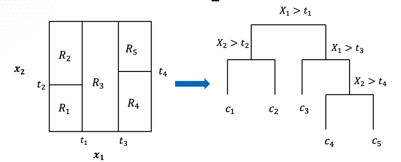

ISYE 7406: Data Mining and Statistical Learning
Table of Contents
- 1. Week 3: Linear Regression (II)
- 2. Week 4: Linear Classification
- 2.1. Overview of Linear Discriminant Analysis (4.1.1)
- 2.2. Linear discrimination analysis continued (4.1.2)
- 2.3. Quadratic Discrimination Analysis classifier (4.1.3)
- 2.4. Logistic Regression: Estimation (4.2.1)
- 2.5. Optimizations in Logistic Regression (4.2.2)
- 2.5.1. Logistic regression recap
- 2.5.2. MLE in logistic regression
- 2.5.3. Optimization problem
- 2.5.4. Optimization algorithms
- 2.5.5. Newton-Raphson Method
- 2.5.6. Taylor Expansion consideration
- 2.5.7. Newton-Raphson Method in Statistics
- 2.5.8. MLE of logistic regression
- 2.5.9. Algorithm for MLE in logistic regression
- 2.6. Simplest logistic regression (4.2.3)
- 3. Week 5: Linear Classification Cont'd (Module 3)
- 4. Week 6: Local Smoothers and Additive Models
- 5. Week 7: Local Smoothers and Additive Models (Cont'd)
- 5.1. Spline Interpolation
- 5.1.1. Recap: Local Smoothing
- 5.1.2. Interpolating Splines
- 5.1.3. Zero-order spline
- 5.1.4. First-order spline
- 5.1.5. $d$-order splines
- 5.1.6. Cubic spline interpolation
- 5.1.7. Parameters in cubic splines
- 5.1.8. Constraints in cubic splines
- 5.1.9. Natural cubic splines
- 5.1.10. Simulation study
- 5.1.11. Spline interpolation in R
- 5.1.12. Summary
- 5.2. Cubic spline smoothing
- 5.3. Optimality and algorithms in splines
- 5.4. Additive models
- 5.5. Generalized additive models
- 5.6. Splines applied to Spam dataset
- 5.1. Spline Interpolation
- 6. Week 8: Tree-Based and Ensemble Methods
- 7. Week 9: Tree-Based and Ensemble Methods (Cont'd)
- 8. Week 10: Tree-Based and Ensemble Methods (Cont'd)
- 9. Week 12: Advanced Supervised Learning
1. Week 3: Linear Regression (II)
M2T2
1.1. James-Stein Estimator
1.1.1. It's a special case of linear regression
in LR model with \[ Y_{n\times 1} = X_{n\times p} \beta_{p\times 1} + \epsilon_{n\times 1}, \text{s.t.} \epsilon \sim N(0, \sigma^2 I_{n\times n}) \]
Special case:
- \(n=p\)
- \(X_{n\times p} = I_{p\times p}\)
OLS yields the estimator of:
\[ \hat{\beta_{ols}} = (X^T X)^{-1} X^T Y = (I^T_{p\times p} I_{p\times p})^{-1} I^T_{p\times p} Y_{p\times 1} = \bf{Y_{p\times 1}} \]
When \(\bf{p\ge 3}\), is it possible to do better than OLS?
1.1.2. Simultaneous estimation
Problem of estimating \(p\) # of parameters \(\beta_i\)'s simultaneously from \(p\) observations (\(Y_i\)'s) under model:
\[ \bf{Y_i} \sim N(\beta_i, \sigma^2), \text{for }i = 1, 2, ..., p \]
OLS (a.k.a. Maximum Likelihood Estimator, MLE) yields estimator:
\[ \hat{\beta_i} = Y_i \text{ for }i = 1, 2, ..., p \]
Is it possible to do better here?
1.1.3. JS estimator
Showed MLS/MLE estimator inadmissible for \(p\ge 3\); dominated by JS estimator.
\[ \hat{\beta_i^{MLE}} = Y_i \text{ for }i = 1, 2, ..., p \]
\[ \hat{\beta_i^{(JS)}} = w Y_i + (1-w) \bar{Y} \text{ for }i = 1, 2, ..., p; \]
\[ w = 1 - \frac{(p-3)\sigma^2}{\sum^p_i(Y_i-\bar{Y})^2} \]
1.1.4. Baseball example
- Observe \(Y_1, Y_2, ... Y_p\) batting averages (where \(Y_i\) is the batting average for p=18 players), 45 AB
- "True" values \(\mu_i\) are the averages over remainder of seasons, 370 AB
- Qn: how to predict season averages \(\mu_i\) from early statistics \(Y_i\)?
- Estimators: MLE and JS
1.1.5. Comparing MLE and JS
- JS has lower predictive squared error than MLS (by 50%)
- JS estimator is shrinkage estimator.
- Each MLE value shrunken towards grand mean
- Data-based estimator, compromises between:
- null hypothesis: all means the same
- MLE assumption: no relationship between all \(\mu_i\) values
- Difficult to estimate \(p\ge 3\) parameters simultaneously.
1.2. Shrinkage Methods
- Estimation in linear regression: JS works in only specific cases (1.1.1) when \(p\ge 3\)
- How to do better generally?
- Shrinkage methods (penalized, regularized)
- Based on subtracting penalty from log-likelihood
- Penalty is a function of decay parameter
- Sort the variables to be included by size of decay parameter
- This reduces to a nested case
- After estimating decay parameter, variable or model selection is complete!
1.2.1. Setting up shrinkage method
- Needs: \(Y_1, x_{11}, x_{12}, ..., x_{1,p}, \text{such that } i = 1,2,...,n\)
- Assume all X & Y are standardized i.e.: \[ \sum^n_{i=1}Y_i = 0, \sum^n_{i=i}x_{ij} = 0, \sum^n_{i=1}x^2_{ij} = 1 \]
If not standardized, do linear transformations: \[ Y^{*}_i = Y_i - \bar{Y} \]
\[ x^{*}_{ij} = \frac{x_{ij}-\bar{x_j}}{\sqrt{\text{Var}_j}} \]
- With this assumption, \(\beta_0 = 0\) in the model, i.e. \[ Y_i = \bf{0 } \beta_1 x_{i1} + \beta_2 x_{i2} + ... + \beta_p x_{i,p} + \epsilon_i \]
The shrinkage method solves this optimization problem
\[ \parallel Y_{n\times 1}-X_{n\times p}\beta_{p\times 1} \parallel^2 + \lambda\sum^p_{j=1}J(|\beta_j|) \]
- penalty function
- \(J(|\beta_j)\)
- decay or tuning parameter
- \(\lambda \ge 0\)
1.2.2. Alternative formulation
- Shrinkage method solves the unconstrained optimization problem \[ \parallel Y_{n\times 1}-X_{n\times p}\beta_{p\times 1} \parallel^2 + \lambda\sum^p_{j=1}J(|\beta_j|) \]
Alternative formulation solves a constrained optimization problem
\[ \min_{\beta} \parallel Y_{n\times 1} - X_{n\times p} \beta_{p\times 1} \parallel^2, \text{ subject to: } \sum^p_{j=1} J(|B_j|) \le s \]
- tuning parameter
- \(s \gt 0\)
- The alternative formulation may greatly facilitate computation at times, e.g. in LASSO which is piecewise linear in \(s\).
1.2.3. Bayesian interpretation
- For LR model (1.1.1):
- prior on β
- \(\pi(\beta)\)
- independent prior on \(\sigma^2\)
- \(\pi(\sigma^2)\)
- posterior for \((\beta, sigma^2)\)
- proportional to \[ \pi (\sigma^2)(\sigma^2)^{(n-1)/2}\exp\{-\frac{1}{2\sigma^2} \parallel Y_{n\times 1} - X_{n\times p} \beta_{p\times 1} \parallel^2 + \log \pi(\beta) \} \]
Posterior maximization method yields shrinkage estimator
\[ \parallel Y_{n\times 1} - X_{n\times p} \beta_{p\times 1} \parallel^2 + \lambda \textbf{Pen}(\beta) \]
1.2.4. Choices of priors
i.e. choice of prior \(\pi(\beta)\)
- Normal prior
- yields ridge regression etsimator
- Laplace prior
- yields LASSO estimator
1.2.5. Ridge regression
Normal prior assumes \(\beta_1 ... \beta_p\) are i.i.d. \(N(0, \tau^2)\) with prior density \[ \pi(\beta) = \prod^p_{i=1} \frac{1}{\sqrt{2\pi}\tau} \exp\left (-\frac{1}{2\tau^2}\beta_i^2\right) \]
Yields ridge regression estimator, which minimizes
\[ \parallel Y_{n\times 1} - X_{n\times p} \beta_{p\times 1} \parallel^2 + \lambda \sum^p_{j=1}(\beta_i)^2 \]
1.2.6. LASSO estimator
- Laplace Prior, assume \(\beta_1 ... \beta_p\) are i.i.d. double-exponential (Laplace) \(\sim \text{Lapalce} (,\tau)\) with prior density \[ \pi(\beta) = \prod^p_{i=1} \frac{1}{2\tau} \exp \left(- \frac{1}{\tau} |\beta_i| \right) \]
Yields LASSO estimator that minimizes
\[ \parallel Y_{n\times 1} - X_{n\times p} \beta_{p\times 1} \parallel^2 + \lambda \sum^p_{j=1}|\beta_i| \]
1.3. Ridge Regression
1.3.1. Ridge Regression Estimator
Assume these are observed: \(Y_i, x_{i1}, ..., x_{ip}\), and all are standardized: \[ \sum^n_{i=1} Y_i = 0, \sum^n_{i=1} x_{ij} = 0, \sum^n_{i=1} x^2_{ij} = 1 \]
In linear regression model without intercepts (1.1.1)
The ridge regression estimator is defined as:
\[ \hat{\beta^{\text{ridge}}} = \min_{\beta} \parallel Y_{n\times 1} - X_{n\times p} \beta_{p\times 1} \parallel^2 + \lambda \sum^p_{j=1}(\beta_i)^2 \]
1.3.2. Mathematical solution
- Explicit expression is thus \[ \hat{\beta^{\text{ridge}}} = (X^T_{n\times p}X_{n\times p}+\lambda I_{p\times p})^{-1} X^T_{n\times p}Y_{n\times 1} \]
- Ridge regression estimator or prediction: \[ \hat{Y}^{\text{ridge}} = X_{n\times p} \hat{\beta^{\text{ridge}}} \]
- Requires choosing the tuning parameter \(\lambda\), based on data, usually by cross-validation
1.3.3. Properties of Ridge Regression
- Ridge regression most useful when \(X_{n\times p}\) is non-singular, but has high collinearity
- i.e. \(X^T_{n\times p} X_{n\times p}\) has eigenvalue close to 0
- \(\hat{\beta^{\text{ridge}}}\) is biased, with bias \(\rightarrow\) 0 as \(\lambda \rightarrow 0\)
- As \(\lambda\) increases, \(\hat{\beta^{\text{ridge}}}\) \(\rightarrow 0\), though rarely = 0.
- Despite the bias, \(\text{Var}(\hat{\beta^{\text{ridge}}})\) will usually be smaller than OLS
- Therefore better prediction than OLS.
1.3.4. Computational issues
- How to compute ridge regression efficiently for any \(\lambda\)? \[ \hat{\beta^{\text{ridge}}} = (X^T_{n\times p}X_{n\times p}+\lambda I_{p\times p})^{-1} X^T_{n\times p}Y_{n\times 1} \]
- It is highly non-trivial to compute the inverse of a large \(p\times p\) matrix.
- Singular Value Decomposition (SVD) algorithm:
- Write the matrix \(X_{n\times p}\) in its SVD form \[ X_{n\times p} = U_{n\times p} D_{p\times p} V^T_{p\times p} \] where: \(U\) and $V are orthogonal; D = diag(\(d_1, ..., d_p\)) is diagonal.
- Then: ridge regression estimator becomes the matrix product: \[ \hat{\beta^{\text{ridge}}} = V_{p\times p} \text{diag} \left(\frac{d_1}{d^2_1 + \lambda}, ..., \frac{d_p}{d^2_p + \lambda} \right) U^T_{p\times n} Y_{n\times 1} \]
1.3.5. Example of SVD
- Find SVD of matrix \[ X_{3 \times 2} = \begin{pmatrix} 1 & 0 \\ 0 & 1 \\ 1 & 1 \\ \end{pmatrix} = U_{n\times p} D_{p\times p} V^T_{p\times p} \]
- Steps (required: \(p \leq n\)):
- \(U_{n\times p}\) is the normalized \(p\) (largest) eigenvectors of \(XX^T\)
- \(V_{p\times p}\) is the normalized eigenvectors of \(X^T X\)
- Matrix \(D = \text{diag}(d_1, ..., d_p)\) with \(d_j\) being the square root of \(p\) (largest) eigenvalues of \(XX^T\) or \(X^T X\).
1.3.6. SVD Example (I): \(XX^T\)
For matrix 1.3.5: we have \[ XX^T = \begin{pmatrix} 1 & 0 & 1\\ 0 & 1 & 1 \\ 1 & 1 &2\end{pmatrix} \]
- Characteristic polynomial is \(-\lambda^3 + 4\lambda^2 - 3\lambda = -\lambda(\lambda-1)(\lambda-3)\)
- The eigenvalues of \(XX^T\) are \(\lambda = 3, 1, 0\)
- Corresponding eigenvectors are: \[ u'_1 = \begin{pmatrix} 1 \\ 1 \\ 2\end{pmatrix}, u'_2 = \begin{pmatrix} 1 \\ -1 \\ 0\end{pmatrix}, u'_3 = \begin{pmatrix} 1 \\ 1 \\ -1\end{pmatrix}, \]
- Normalizing yields \[ U_{3\times 2} = \begin{pmatrix} 1\over{\sqrt{6}} & 1\over{\sqrt{2}} \\ 1\over{\sqrt{6}} & -1\over{\sqrt{2}} \\ 2\over{\sqrt{6}} & 0 \end{pmatrix}, \]
- \(d_1 = \sqrt{3}, d_2 = \sqrt{1} = 1\)
1.3.7. SVD Example (II): \(X^T X\)
For matrix 1.3.5: \[ X^T X = \begin{pmatrix} 2 & 1 \\ 1 & 2 \\ \end{pmatrix} \]
- Characteristic polynomial is \(\lambda^2 - 4\lambda + 3 = (\lambda -1)(\lambda -3)\)
- Eigenvalues of \(XX^T\) are: \(\lambda = 3, 1\).
- Corresponding eigenvalues are: \[ v'_1 = \begin{pmatrix} 1 \\ 1\end{pmatrix}, v'_2 = \begin{pmatrix} 1 \\ -1\end{pmatrix} \]
- Normalizing them yields: \[ V_{2\times 2} = (v_1, v_2) = \begin{pmatrix} 1\over\sqrt{2} & 1\over\sqrt{2} \\ 1\over\sqrt{2} & -1\over\sqrt{2}\end{pmatrix}, \]
- \(d_1 = \sqrt{3}, d_2 = \sqrt{1} = 1\)
1.3.8. SVD verification
Might need to multiply some eigenvectors by -1.
\begin{equation} X_{n\times p} = \begin{pmatrix} 1 & 0 \\ 0 & 1 \\ 1 & 1\end{pmatrix} = \begin{pmatrix} 1\over{\sqrt{6}} & 1\over{\sqrt{2}} \\ 1\over{\sqrt{6}} & -1\over{\sqrt{2}} \\ 2\over{\sqrt{6}} & 0\end{pmatrix} \begin{pmatrix} \sqrt{3} & 0 \\ 0 & 1\end{pmatrix} \begin{pmatrix} 1\over{\sqrt{2}} & 1\over{\sqrt{2}} \\ 1\over{\sqrt{2}} & -1\over{\sqrt{2}}\end{pmatrix} = U_{n\times p} D_{p\times p}V^T_{p\times p} \end{equation} \begin{equation} = \lambda_1 u_1 v^T_1 + \lambda_2 u_2 v^T_2 = 0.5\begin{pmatrix} 1 & 1 \\ 1 & 1 \\ 2 & 2 \end{pmatrix} + 0.5\begin{pmatrix} 1 & -1 \\ -1 & 1 \\ 0 & 0 \end{pmatrix} \end{equation}1.4. LASSO (3.2.1)
1.4.1. LASSO estimator
- Assume these are observed: \(Y_i, x_{i1}, ..., x_{ip}\), and all are standardized:
\[ \sum^n_{i=1} Y_i = 0, \sum^n_{i=1} x_{ij} = 0, \sum^n_{i=1} x^2_{ij} = 1 \]
In linear regression model without intercepts (1.1.1)
- LASSO
- Least Absolute Selection and Shrinkage Operator
- Definition
- \[ \hat{\beta}^{\text{lasso}} = \min_\beta \parallel Y_{n\times 1} - X_{n\times p} \beta_{p\times 1} \parallel^2 + \lambda \sum^p_{j=1} |\beta_j| \]
- s.t.
- tuning parameter \(\lambda > 0\)
1.4.2. L2-norm vs L1-norm

- L1-norm: sparse, as boundary points of the L1-norm ball have lower dimensions (are in lower-dimensional space, \(x_1 = 0, or x_2=0\))
1.4.3. Mathematical solution for LASSO estimator
- In the LASSO optimization, there is no explicit mathematical solution to \(\hat{\beta}^{\text{lasso}}\)
- Hence, need to use computational algorithms to get solution
- Explicit solution only available when \(X^T X = I_{n\times n}\)
In this case, LASSO estimator is:
\begin{equation} \hat{\beta}^{\text{lasso}}_j = \begin{cases} \hat{\beta}_j^{ols} - \frac{\lambda}{2} & \text{if }\hat{\beta}_j^{ols}> \frac{\lambda}{2}\\ 0 & \text{if }|\hat{\beta}_j^{ols}| \leq \frac{\lambda}{2}\\ \hat{\beta}_j^{ols} + \frac{\lambda}{2} & \text{if }\hat{\beta}_j^{ols} < -\frac{\lambda}{2}\\ \end{cases} \end{equation}
As: LASSO can be simplified to 1-dimensional optimization problem
\[ \min_{-\infty < x < \infty} (x - \hat{\beta}_j^{ols})^2 + \lambda |x| \]
since:
\[ \parallel Y - X\beta \parallel^2 = \parallel Y-X\hat{\beta}^{ols} \parallel^2 + (\beta - \hat{\beta}^{ols})^T X^T X(\beta - \hat{\beta}^{ols}) \]
1.4.4. Properties of LASSO
- Good empirical performance when true model is sparse
- If so, outperforms AIC, BIC, stepwise, ridge
- Nice theoretical properties, i.e. high probability of the following under certain regularity conditions:
- parameter recovery
- when \(|\hat{\beta}_j^{lasso}-\hat{\beta}^{true}|^2\) is small
- variable selection
- \(\textbf{supp}(\hat{\beta}_j^{lasso}) = \textbf{supp}(\beta^{true})\)
- prediction error bound
- \(|X\hat{\beta}_j^{lasso} - X\beta^{true}|^2\) is small
1.4.5. LASSO weaknesses
- Not always consistent
- Tends to select over-parameterized model
- Does poorly when
- True model is not sparse
- When few X variables are highly correlated (LASSO picks 1 randomly)
- When the design \(X\) matrix is too correlated (Ridge outperforms)
- When there are outliers in responses
1.4.6. Computation issues of LASSO
- Computation algorithms include:
- Coordinate descent
- Sub-gradient methods
- Proximal gradient methods
- Would be ideal to compute entire solution path all at once, i.e. for all values for \(\lambda\) simultaneously.
1.4.7. LASSO is piecewise linear
- The number of linear pieces in LASSO path is approximately \(p\),
- The computational complexity of getting whole LASSO path is \(O(np^2)\)
- i.e. same cost as computing least-squares fit
1.4.8. Standard error of LASSO
- How to estimate standard error of LASSO estimator i.e. \[ \hat{\beta}^{\text{lasso}} = \min_\beta \parallel Y_{n\times 1} - X_{n\times p} \beta_{p\times 1} \parallel^2 + \lambda \sum^p_{j=1} |\beta_j| \]
- Answer: bootstrapping:
- Fix \(\lambda\), generate a set of bootstrap samples
- Obtain corresponding \(\hat{\beta}^{lasso}(\lambda)\)
- Repeat for \(L\) times and use them to estimate standard error
- If not determined/fixed, \(\lambda\) can be estimated by cross-validation (e.g. 5 fold CV).
1.4.9. Variants of L1-norm
- Elastic net \[ \hat{\beta}^{enet} = \min_\beta \parallel Y_{n\times 1} - X_{n \times p} \beta_{p \times 1} \parallel^2 + \lambda_1 \sum^p_{j=1} |\beta_j| + \lambda_2 \sum^p_j (\beta_j)^2 \]
1.5. Principal Components (3.2.2)
Assume these are observed: \(Y_i, x_{i1}, ..., x_{ip}\) for \(i=1,2,...,n\)
Classical datasets: mostly small values of \(p\); modern datasets: large \(p\).
Essential to conduct dimension reduction to reduce the number of variables.
1.5.1. Dimension reduction
- 2 approaches:
- variable selection, i.e.: AIC, BIC, stepwise algorithm, LASSO, etc.
- feature extraction, i.e. identify which functions of data are most important. no restricted to using existing features/variables. Options are:
- Principal component analysis
- Partial least squares
1.5.2. Motivation of PCA
"Obtain more variance by transforming axes"
- Find linear combinations of \((x_1, ..., x_p)\) that express as much variability in \(X\) as possible.
- A linear combination with high variance will likely affect the response the most
- If most variation of \(X\) comes from the first few PCs then: enough to build models.
- Other linear combination vary so little among different observations → can be ignored
1.5.3. Find the PC's: Population version
- Optimization problem for PC's: Given a \(p\) -dim random vector \[ \textbf{X} = (X_1, ..., X_p)^T, \text{ with covariance } \Sigma = \text{Cov}(X) \]
- PC1: Find \(U_1 = \alpha_1 X_1 + ... + \alpha_p X_p\) that maximizes \[ \textbf{Var}(\alpha_1 X_1 + ... + \alpha_p X_p) = \textbf{Var}(\alpha^T \textbf{X}) = \alpha^T \Sigma \alpha \] subject to: \[ \alpha^2_1 + ... \alpha^2_p = 1, \text{i.e. } \alpha^T \alpha = 1, \text{where } \alpha = (\alpha_1, ..., \alpha_p)^T \]
- PC2: Find \(U_2 = \alpha_1 X_1 + ... + \alpha_p X_p\) that maximizes \text{Var}(αT X) = αT Σα$, subject to constraints: - \(\alpha^T \alpha = 1\)
- \(\text{Cov}(U_1, U_2) = 0\)
- Other (later) PC are defined analogously and uncorrelated with all previous PC's
1.5.4. Eigenvectors lead to PC's
- Theorem: Let covariance matrix \(\bf{\Sigma} = \text{Cov}(\bf{X})\) have eignvectors \(e_1, ..., e_p\) with corresponding eigenvalues \(\lambda_1 \ge ... \ge \lambda_p \ge 0\). For \(j=1,2,...,p\),
- \(j\) -th PC is \[ U_j = e_j^T X = e_{j1}X_1 + ... + e_{jp}X_p \]
- Variance of \(j\) -th PC is \[ \text{Var}(U_j) = \bf{e_j^T\Sigma e_j} = \lambda_j \]
1.5.5. Proof by Lagrange Multipliers
- The Lagrange multiplier is to maximize \[ \phi(\alpha) = \alpha^T \Sigma\alpha - \lambda(\alpha^T \alpha -1) \]
- Setting derivatives qual = 0 gives: \[ \frac{\partial \phi(\alpha)}{\partial\alpha} = 2\Sigma\alpha - 2\lambda\alpha = 0 \]
- Thus: \(\Sigma\alpha = \lambda\alpha\) → λ is an eigenvalue of Σ and α is the corresponding normalized eigenvector.
- For \(U = \alpha^T X\), we have \(\text{Var}(U) = \alpha^T \Sigma\alpha = \alpha^T (\lambda\alpha) = \lambda\).
- For PC1, we need to find largest eigenvector of Σ.
- Proofs of other Pcs are similar.
1.5.6. PCs in Empirical Version
In many real world applications, only given dataset \(Y_i, x_{i1}, ..., x_{ip}\) for \(i=1,2,...,n\) How to find PC's?
- Key idea: estimate the unknown Σ by \(\hat{\Sigma}_{p\times p}\) from the data, then find the PC's by the eigenvalues and eigenvectors of \(\hat{\Sigma}_{p \times p}\)
- Empirical covariance matrix \(\hat{\Sigma}_{p\times p}\) is widely used when \(p
- Here, the \((r,s)\) entry of \(\hat{\Sigma}_{p\times p}\) is defined as: \[ \hat{\Sigma}_{rs} = \frac{1}{n} \sum^n_i(x_{ir}-\bar{x}_r)(x_{is}-\bar{x}_s) \]
- Research tbd on how to estimate \(\Sigma\) effectively when \(p>>n\).
1.5.7. Principal component regression
- Original data: \(Y_i, x_{i1}, ..., x_{ip}\) for \(i=1,2,...,n\)
- After we extract all PC's, raw data can be written as new format \((Y_i, u_{i1}, ..., u_{ip})\) for \(i=1,2,...,n\)
- Principal component regression: linear regression by using only first \(k\) PC's: \[ Y_i = \beta_0 + \beta_1 u_{i1} + ... + \beta_k u_{ik} + \epsilon_i \]
- Choosing \(k\): done by cross-validation.
1.6. Partial least squares (3.2.3)
1.6.1. Dimension reduction
There are 2 kinds of dimension reduction algorithms:
- Unsupervised dimension reduction, e.g. PCA. Criticisms: it explains \(X\) but no reason to be sure that the result also explains a response \(Y\).
- Supervised dimension reduction, i.e. conduct reduction on \(X\) by using the extra information in \(Y\).
- Reasonable to believe that supervised techniques will do better
- Partial least squares is one such technique
1.6.2. Partial least squares
Collection of techniques with 2 common properties:
- Maximizes correlation between \(Y \& X\), rather than maximizing variance of \(Y\) only.
- Can be interpreted as finding the underlying factors of \(X\) that are also underlying factors of \(Y\).
1.6.3. 2 versions of PLS
- Simple PLS algorithm: variant of PC's but using correlation instead of variance
- PLS model: identify common factors of \(X \& Y\)
1.6.4. Simple PLS algorithm
- Given \(Y_i, x_{i1}, ..., x_{ip}\) for \(i=1,2,...,n\)
- Let \(x_i = (x_{i1}, ..., x_{ip})^T\).
- First PLS, \(V_1 = \alpha_1 X_1 + ... + \alpha_p X_p\) is defined as finding \(\alpha = (\alpha_1, ..., \alpha_p)^T\) that maximizes covariance \[ \hat{\textbf{CoV}}(Y, V_1) = \frac{1}{n} \sum^n_i (Y_i-\bar{Y})(v_i-\bar{v}), \] when \(v_i = \alpha_1 x_{i1} + ... + \alpha_p x_{ip}\) for \(i=1,2,...n\) subject to \(\alpha^T \alpha = 1\)
- Later PLSs are defined analogously to maximize the covariance and are assumed to be uncorrelated with all previous PLSs.
- Solution: the \(\alpha\)'s are the eigenvectors of the \(p \times p\) matrix \(X^T Y Y^T X\) when the data matrices \(X \& Y\) have column mean zero.
1.6.5. The PLS model
- Data: \(Y_i, x_{i1}, ..., x_{ip}\) for \(i=1,2,...,n\)
- Assume data have mean 0.
- Write data matrix as \((Y_{n \times q}, X_{n \times p})\)
- Goal: find \(\ell\) linear combinations from \(X \& Y\) to use as new dimensions.
The PLS model: noniterative iterative partial least squares (NIPALS):
\[ X_{n \times p} = T_{n \times \ell} P_{\ell \times p} + E, Y_{n \times q} = U_{n \times \ell} Q_{\ell \times q} + F \] where:
- \(T_{n \times \ell}\) and \(U_{n \times \ell}\) represent \(\ell\) factors
- \(P_{\ell \times p}\) and \(Q_{\ell \times q}\) are loadings.
1.6.6. Key idea in The PLS Model
- How to estimate the ℓ factors, or the \(T_{n \times \ell}\) and \(U_{n \times \ell}\) matrices?
- Answer:
- Write the first column of \(T_{n \times \ell}\) and \(U_{n \times \ell}\) as \(t=\bf{X} r\) and \(u=\bf{Y} s\) for two unit vectors, \(\parallel r \parallel = \parallel s \parallel = 1\)
- Find \(r\) and \(s\) that maximizes the covariance-squared: \(\textbf{Cov}^2(Xr, Ys)\)
1.6.7. PLS for linear regression
- Original data: \(Y_i, x_{i1}, ..., x_{ip}\) for \(i=1,2,...,n\)
- After extracting all PLS's, raw data can be written as new formats \((Y_i, v_{i1}, ..., v_{ip})\) for \(i=1,2,...,n\)
- Partial least squares regression: linear regression using only first k PLSs: \[ Y_i = \beta_0 + \beta_1 v_[i1] + ... + \beta_k v_{ik} + \epsilon_i \]
- Choosing \(k\): by cross-validation
1.6.8. Canonical correlation analysis (CCA)
- CCA: find the unit vectors \((r, s)\) that maximizes the correlation coefficient \[ \text{Corr}(Xr, Ys) = \frac{r^T \Sigma_{XY}s}{\sqrt{r^T \Sigma_{XX}r}\sqrt{s^T \Sigma_{YY}s}} \]
Solution: in the population(?) version with \((X_1, ..., X_p)\) and \((Y_1, ..., Y_q)\), consider \(r^T X = r_1 X_1 + ... + r_p X_p\) and \(s^T Y = s_1 Y_1 + ... + s_q Y_q\), the optimal \(r, s\) values are the respective eigenvectors of
\[ \Sigma^{-1}_{XX} \Sigma^{-1}_{YY} \Sigma_{YX} \text{ and } \Sigma^{-1}_{YY} \Sigma^{-1}_{XX} \Sigma_{XY} \]
2. Week 4: Linear Classification
2.1. Overview of Linear Discriminant Analysis (4.1.1)
Supervised learning recap
- Data: \(Y_i, x_{i1}, ..., x_{ip}\) for \(i=1,2,...,n\)
- Objective: predict \(Y\) for given new input \(x_{\text{new}} = (x_1, ..., x_p)\)
- Types of tasks:
- Regression: why response \(Y\) is continuous
- Regression: When response $Y is binary, or discrete values representing classes
2.1.1. Classification problem
- For \(Y_i, x_{i1}, ..., x_{ip}\) for \(i=1,2,...,n\) where \(Y_i \in {1, 2, ...K}\) is the class label
- Objective: find a decision function to discriminate among data form the \(K\) different classes.
- Learn a decision rule \(h(x) \in {1, 2, ...k}\) used to separate the \(K\) classes
- Predict the class label for new input \(x_{\text{new}}\)
- Example: classifying patients in hospital ER into classes (low, med, high risk) by age, gender, weight, BP, insurance, etc.
- Assign treatment priority to high-risk patients?
2.1.2. Popular classification methods and R packages
- Discriminant analysis
- ?
a- Tree-based classifiers :: rpart
- Boosting
gbm- Random forest
randomForest- Neural networks
nnet- svm
e1071
2.1.3. Discriminant analysis
- A multi-classifier is associated with a \(K\) - dim vector \[ d(x) = (d_1 (x), ..., d_K (x)) \] where \(d_k (x)\) represents the strength of evidence that \(x\) is in class \(k\).
For given new input \(x_{\text{new}}\), predict the class label
\[ \hat{k} = \text{argmax}_{k=1, 2, ..., K} d_k (x_\text{new}) \]
- Discriminant functions \(d_k (x)\) are linear functions of \(x = (x_1, ..., x_p)\)
2.1.4. Example for 3-class problem
Predict \(Y \in {1,2,3}\) based on \((X_1, X_2)\):
- Class 1 if \(d_1 > \max(d_2, d_3)\)
- Class 2 if \(d_2 > \max(d_1, d_3)\)
Class 3 if \(d_3 > \max(d_1, d_2)\)
In this example, boundaries \({(x_1, x_2): d_i (x_1, x_2) = d_j(x_1, x_2)}\) are linear.
2.1.5. Discriminant functions
How to construct discriminant functions \(d_k (x)\) 's? 3 approaches are available:
- Distance-based discriminant analysis, e.g. \(d_k\) is the distance between the sample mean of the \(k\) -th class and the new input \(x\).
- Bayes Rules
- Probability-based rule, i.e. Logistic Regression
2.1.6. Multi-class vs. Binary
If the number \(K\) of classes is not too large, can simplify the multi-class problems into series of binary problems via two approaches:
- one vs rest
- training binary classifiers with ∂k(X) separating class \(k\) from the rest. It's easy to implement but poor performance if no dominating class. Binary problems are unbalanced.
- pairwise comparison approach
- train \(K(K-1)/2\) binary classifiers. The final class prediction is decided by a voting scheme among all classifiers.
2.2. Linear discrimination analysis continued (4.1.2)
See: 2.1.3.
LDA was first developed as distance-based classification (Fisher, 1936). Alternate interpretation: Bayes.
2.2.1. Bayes classifier
- Under \(0-1\) loss, Bayes classifier is
\[
\text{argmax}_k (P(Y=k | x))
= \text{argmax}_k (\pi_k f_k (x))
= \text{argmax}_k (\log(\pi_k) + \log(f_k (x)))
\]
where:
- \(\pi_k\)
- a prior
- \(f_k\)
- the density function of the \(k\) -th class
2.2.2. Normality asumption
LDA is the Bayes Rule under assumption that densities \(f_k\) are multivariate normal with the common covariance, i.e. \(N(\mu_k, \Sigma)\).
Mathematically, LDA assumes: \[ f_k(x) = \frac{1}{\sqrt{2\pi}|\text{det}(\Sigma)} \exp\left({-\frac{1}{2} (x-\mu_k)^T \Sigma^{-1}(x-\mu_k)}\right) \] for \(k=1,2,...,K\)
2.2.3. Bayes classifier for normal distribution
If the \(f_k\) are normal with common variance, i.e. \(N(\mu_k, \Sigma)\), then the Bayes classification rule is \[ \text{argmax}_k \left( -\frac{1}{2} \text{logdet}(\Sigma) - \frac{1}{2}(x-\mu_k)^T\Sigma^{-1}(x-\mu_k) + \log \pi_k \right) \]
\[ = \text{argmax}_k \left( x^T\Sigma^{-1}\mu_k - \frac{1}{2}\mu^T_k \Sigma^{-1} \mu_k + \log \pi_k \right) \]
since the common variance term drops out.
- Leads to linear discrimination function: \[ d_k(x) = x^T \Sigma^{-1} \mu_k - \frac{1}{2}\mu_k^T \Sigma^{-1} \mu_k + \log \pi_k \]
2.2.4. LDA in practice
- Data: for \(Y_i, x_{i1}, ..., x_{ip}\) for \(i=1,2,...,n\) where \(Y_i \in {1, 2, ...K}\) is the class label
- LDA uses the discrimination function: \[ d_k(x) = x^T \Sigma^{-1} \mu_k - \frac{1}{2}\mu_k^T \Sigma^{-1} \mu_k + \log \pi_k \]
- In practice, parameters are estimated from training data as follows:
- \(\hat{\pi_k}\)
- \(\frac{n_k}{n}\)
- \(\hat{\mu_k}\)
- \(\frac{1}{n_k} \sum_{y_i=k} x_i\) where \(n_k\) is the no. of observations in class \(k\)
- \(\hat{\Sigma}\)
- \(\frac{1}{\sum^K_{k=1}(n_k -1)} \sum^K_{k=1} \sum_{y_i=k}(x_i - \hat{\mu}_k)(x_i-\hat{\mu}_k)^T\) which is the within-class sample variance
2.2.5. LDA for K=2 classes
Classifies into class 2 if and only if
\begin{equation} x_T \hat{\Sigma}^{-1} - \frac{1}{2} \hat{\mu}^T_2 \hat{\Sigma}^{-1} \hat{\mu}_2 + \log \hat{\pi}_2 > x^T \Sigma^{-1}\hat{\mu}_1 - \frac{1}{2} \hat{\mu}_1^T \hat{\Sigma}^{-1} \hat{\Sigma}_1 + \log \hat{\pi}_1 \end{equation}or
\begin{equation} x^T \Sigma^{-1}(\hat{\mu}_2- \hat{\mu}_1) > \frac{1}{2} \hat{\mu}_2^T \hat{\Sigma}^{-1} \hat{\mu}_2 - \frac{1}{2}\hat{\mu}_1^T \Sigma^{-1} \hat{\mu}_1 + \log{\frac{n_1}{n}} - \log{\frac{n_2}{n}} \end{equation}- let \(w=\Sigma^{-1} (\hat{\mu}_2 - \hat{\mu}_1)\), the LHS = \(x^T w = w \cdot x = w_1 x_1 + ... + w_p x_p\), is the projection of the \(p\) -th dimensional vector \(x\) to a real-valued number
2.2.6. Fisher's distance-based approach
- for \(k=2\) classes:
- projects the p-dimensional vector \(\textbf{x}\) to a real-valued number \[ L = \textbf{w} \cdot \textbf{x} = x^T w = w_1x_1 + ... + w_p x_p \]
- Find the optimal direction \(\textbf{w}\) that best separates two classes on the projection line, using training data
- Assign new point \(x\) to class 2 if and only if: \[ \textbf{w} \cdot \textbf{x} > \textbf{w} \cdot \frac{\hat{\mu}_1 + \hat{\mu}_2}{2} \]
Equivalently: assign \(x\) to class 2 if
\begin{equation} x^T \Sigma^{-1}(\hat{\mu}_2- \hat{\mu}_1) > \frac{1}{2} \hat{\mu}_2^T \hat{\Sigma}^{-1} \hat{\mu}_2 - \frac{1}{2}\hat{\mu}_1^T \Sigma^{-1} \hat{\mu}_1 \end{equation}which is the same as Bayes-based LDA when the classes have equal numbers of observations.
2.3. Quadratic Discrimination Analysis classifier (4.1.3)
See 2.1.3. How to choose suitable discriminant functions \(d_k(x)\)?
2.3.1. Bayes classifier
- The discriminant functions \(d_k(x)\) are based on posterior distributions
The Bayes classifier is defined as:
\begin{equation} \text{argmax}_k (P(Y=k|x)) = \text{argmax}_k (\pi_k f_k (x)) = \text{argmax}_k (\log \pi_k + \log f_k (x)) \end{equation}where:
- \(\pi_k\) is a prior
- \(f_k\) is the density function of the \(k\) th class
Question: how to model the density functions \(f_k\)? Normal distribution!
2.3.2. Normal distribution
Univariate normal distribution \(N(\mu, \sigma^2)\)
- Probability density function is given by: \[ p(x) = \frac{1}{\sqrt{2\pi}\sigma} \exp \left( -\frac{1}{2\sigma^2} (x-\mu)^2\right) \]
- parameter estimation of \((\mu, \sigma^2)\) from training data:
- sample mean, \(\hat{\mu}\)
- \(\bar{x} = \frac{1}{n} \sum^n_{i=1}x_i\)
- sample variance, \(\hat{\sigma}^2\)
- \(\frac{1}{n-1} \sum^n_{i=1} (x_i - \bar{x})^2\)
- properties: the components of \(X\) are independent iif \(\Sigma\) is diagonal!
2.3.3. Normal model for \(f_k\)
- See 2.1.3
- Bayes classifier: \(\text{argmax}_k (\log \pi_k + \log f_k (x))\) where \(\pi_k\) is a prior and \(f_k\) is the pdf of the \(k\) th class.
- Model: assume pdfs \(f_k(x) = f_k(x_1, ..., x_p) \sim N(\mu_k, \Sigma_k)\)
- Question: how to estimate \((\mu_k, \Sigma_k)\)?
2.3.4. Three approaches to estimate
Different assumptions:
- Linear discriminant analysis
- When \(\Sigma_k \equiv \Sigma\) (common variance), estimated by within-sample covariance
- Quadratic discriminant analysis
- when \(\Sigma_k\) is estimated by the sample covariance of the \(k\) -th class
- Naive Bayes
- when each component of \(\textbf{X}\) is independent, i.e. when \(\Sigma_k \equiv \Sigma = \text{diag}(\sigma^2_{k1}, ..., \sigma^2_{kp})\)
2.3.5. QDA classifier
- Assumes that \(f_k\) are normal \(N(\mu_k, \Sigma_k)\)
- Assigns data \(x\) to the class: \[ \text{argmax}_k \left( -\frac{1}{2} \log \text{det}(\Sigma_k) - \frac{1}{2}(x-\mu_k)^T \Sigma^{-1}_k (x-\mu_k) + \log \pi_k \right) \]
- In practice, estimated from training data:
- \(\hat{\pi}_k\)
- \(\frac{n_k}{n}\)
- \(\hat{\mu}_k\)
- \(\frac{1}{n_k} \sum_{y_i = k} x_i\) where nk is the no. of observations in class \(k\)
- \(\hat{\Sigma}_k\)
- \(\frac{1}{n_k-1} \sum_{y_i=k} (x_i-\hat{\mu}_k)(x_i - \hat{\mu}_k)^T\) which is the sample covariance of class \(k\)
2.3.6. Naive Bayes classifier
- Assumes that \(\Sigma_k \equiv \Sigma = \text{diag}(\sigma^2_{k1}, ..., \sigma^2_{kp})\), or equivalently: \[ f_k(x) = f_k (x_1, ..., x_p) = \prod^p_{j=1} f_{kj}(x_j), f_{kj} \sim N(\mu_{kj}, \sigma^2_{kj}) \]
- Assigns \(x\) to class \(\text{argmax}_k (\pi_k \prod^p_{j=1}) f_{k,j}(x_j)\)
- In practice, parameters \((\mu_{kj}, \sigma^2_{kj})\) estimated from the \(j\) -th component of \(X\) variables for \(k\) -th class in training data:
- \(\hat{\pi}\)
- \(\frac{n_k}{n}\)
- \(\hat{\mu}_{kj}\)
- \(\frac{1}{n_k} \sum_{y_i = k} x_{ij}\)
- \(\hat{\sigma^2_{kj}}\)
- \(\frac{1}{n_k-1} \sum_{y_i = k} (x_{ij}-\bar{x}_j)^2\)
2.3.7. General Naive Bayes classifier
- Ignore any dependence between explanatory variables and assume that \(X_j\)'s are independent.
- Thus, corresponding classifier is \[ \text{argmax}_k (\pi_k \prod^p_{j=1}f_{k,j}(x_j)) \]
- In practice, marginal densities \(f_{k,j} (\cdot)\) are usually assumed to be parameterized by some parameters, which must be estimated, e.g.:
- Gaussian Naive Bayes
- Bernoulli Naive Bayes
- Multinomial Naive Bayes
- Poisson Naive Bayes
2.4. Logistic Regression: Estimation (4.2.1)
2.4.1. Classification methods
- With data \((Y_i, X_i)\) for \(i=1,...,n\), where \(Y_i\) is the class label
- Two approaches to develop classifiers:
- Model conditional densities \(f_k = p(\textbf{X}|Y=k)\) at the given \(k\) -th class
- Normality assumption on X: LDA, QDA, Naive Bayes
- Model the conditional density \(P(Y=k|\textbf{X})\) directly:
- Bernoulli assumption on Y: Logistic Regression
- Model conditional densities \(f_k = p(\textbf{X}|Y=k)\) at the given \(k\) -th class
2.4.2. Binary logistic regression
- With data: \((Y_i, x_{i1}, ..., x_{i,p-1})\) for \(i=1,...,n\), where \(Y_i \in {0,1}\) is the class label
- Logistic regression defined as 2 components:
- Model the response \(\textbf{Y}\) as Bernoulli distribution: \[ P(Y_i=1) = \pi_i \\ P(Y_i = 0) = 1-\pi_i \]
- Link the model parameters to the independent \(\textbf{X}\) variables: \[ \log \frac{\pi_i}{1-\pi_i} = \beta_0 + \beta_1 x_{i1} + ... + \beta_{p-1} x_{i,p-1} \] with \(p\) = number of \(\beta\) coefficients
2.4.3. Conditional probability
- Under logistic regression, at given \(X=(x_1, ..., x_{p-1})\), the conditional probabilities are \[ P(Y=1|X) = \pi = \frac{e^{\beta_0 + \beta_1 x_1 + ... + \beta_{p-1} x_{p-1}}}{1+ e^{\beta_0 + \beta_1 x_1 + ... + \beta_{p-1} x_{p-1}}} \\ P(Y=0|X) = 1-\pi = \frac{1}{1+ e^{\beta_0 + \beta_1 x_1 + ... + \beta_{p-1} x_{p-1}}} \]
2.4.4. Statistical inference
Statistical questions in logistic regression:
- How to estimate the \(\beta\) parameters in the logistic regression model from training data?
- How to conduct hypothesis testing or get confidence interval?
- How to use logistic regression model for prediction?
2.4.5. Maximum likelihood estimation
- The likelihood function of the logistic regression model is \[ L(\beta) = \prod^n_{i=1} \pi_i^{y_i} (1-\pi_i)^{1-y_i} \\ = ... \\ = \prod^n_{i=1} \frac{e^{y_i(\beta_0 + \beta_1 x_{i1} + \beta_2 x_{i2} + ... + \beta_{p-1} x_{i,p-1})}}{1+e^{\beta_0 + \beta_1 x_{i1} + \beta_2 x_{i2} + ... + \beta_{p-1} x_{i,p-1}}} \]
- MLE \(\hat{\beta}\) of the \(\beta_i\) 's can be found by maximizing \(L(\beta)\).
2.4.6. Asymptotic properties of MLE
MLE \(\hat{\beta}\) has nice asymptotic properties: \[ \hat{\beta} \sim N(\beta, I^{-1}_{p\times p}) \] where \(I_{p\times p}\) is the observed Fisher Information Matrix defined by the negative values of the 2nd order derivatives of the log-likelihood function (\(\log L(\beta)\)) at \(\hat{\beta}\), i.e.
\[ I_{p\times p} = (-\frac{\partial^2\log L}{\partial \beta_i \partial \beta_j})|_{\hat{\beta}} \]
2.4.7. Other link function
- With data: \((Y_i, x_{i1}, ..., x_{i,p-1})\) for \(i=1,...,n\), where \(Y_i \in {0,1}\) is the class label
- Generalized linear model: two steps
- \[ P(Y_i = 1) = \pi_i, P(Y_i = 0) = 1-\pi_i \]
- \[ g(\pi_i) = \beta_0 + \beta_1 x_{i1} + \beta_2 x_{i2} + ... + \beta_{p-1} x_{i, p-1} \] where \(g(\cdot): (0,1) \rightarrow (-\infty, infty)\) is called a link function
- Other link functions available:
- Normal/probit link: \(g=\phi^{-1}\) where \(\phi(t) = P(N(0,1) \le t)\) is the c.d.f. of the normal distribution
2.4.8. Logistic or LDA?
Comparison:
- Similar: both have discriminant functions that are linear combinations of independent \(X\) variables
- Difference: how to estimate linear coefficients
- LDA: assume \(X|Y = k\) is Gaussian
- Logistic regression: ignore \(\textbf{P(X)}\)
- Generally, logistic regression is thought to be safer & more robust than LDA
- Often, same results
2.5. Optimizations in Logistic Regression (4.2.2)
2.5.1. Logistic regression recap
- With data: \((Y_i, x_{i1}, ..., x_{i,p-1})\) for \(i=1,...,n\), where \(Y_i \in {0,1}\) is the class label
- Logistic regression model defined as 2 components \[ P(Y_i=1) = \pi_i \\ P(Y_i = 0) = 1-\pi_i \\ \log \frac{\pi_i}{1-\pi_i} = \beta_0 + \beta_1 x_{i1} + ... + \beta_{p-1} x_{i,p-1} \]
- Question: how to estimate the \(\beta_i\) in the model?
2.5.2. MLE in logistic regression
As seen previously, MLE can be found by maximizing likelihood function: \[ L(\beta) = \prod^n_{i=1} \frac{e^{y_i(\beta_0 + \beta_1 x_{i1} + \beta_2 x_{i2} + ... + \beta_{p-1} x_{i,p-1})}}{1+e^{\beta_0 + \beta_1 x_{i1} + \beta_2 x_{i2} + ... + \beta_{p-1} x_{i,p-1}}} \]
- Challenges:
- No explicit solutions to MLE \(\hat{\beta}\).
- Need to rely on numerical solutions to apply efficient optimization algorithm to find MLE \(\hat{\beta}\).
2.5.3. Optimization problem
In statistics and machine learning, we often face optimization problem, e.g.: \[ \hat{\theta} = \text{argmin}_{\theta \in \Theta \subset \Re^p} \] Often \(h(\theta)\) is smooth and we want to solve the first derivative \(h'(\theta) = 0\).
- Iterative method: one widely used optimization algorithm:
- Find sequence of \(\theta^{(i)}\) values until convergence to \(\hat{\theta}\).
- When converged, we have \(h'(\hat{\theta}) = 0\).
2.5.4. Optimization algorithms
Two basic iterative algorithms to solve \(\hat{\theta} = \text{argmin}_\theta h(\theta)\):
- Gradient descent, widely used in machine learning \[ \theta_{\text{new}} = \theta_{\text{old}} - \lambda h'(\theta_{\text{old}}) \] where \(\lambda\) is the learning rate
- Newton-Raphson Method, very popular in statistics \[ \theta_{\text{new}} = \theta_{\text{old}} - [h''(\theta_{\text{old}})]^{-1} h'(\theta_{\text{old}}) \]
2.5.5. Newton-Raphson Method
 Mathematically:
Mathematically:
- When starting at \(\theta_{\text{old}}\) and want to update to \(\theta_{\text{new}} = \theta_{\text{old}} + \epsilon\), how to choose \(\epsilon\) so that \(h'(\theta_{\text{new}})=0\)?
- Answer: Taylor series expansion of \(h(\theta)\) on \(\theta_{\text{old}}\)!
2.5.6. Taylor Expansion consideration
- When \(\theta\) is 1-dim, by Taylor series expansion, \[ h'(\theta_{\text{old}} + \epsilon) \approx h'(\theta_{\text{old}}) + \epsilon h''(\theta_{\text{old}}) \]
- Setting to 0 yields: \[ \epsilon \approx - \frac{h'(\theta_{\text{old}})}{h''(\theta_{\text{old}})} \]
- The idea is identical for high-dim θ. This leads to Newton-Raphson method: \[ \theta_{\text{new}} = \theta_{\text{old}} - [h''(\theta_{\text{old}})]^{-1} h'(\theta_{\text{old}}) \] where updates are done till \(\theta\) converges.
2.5.7. Newton-Raphson Method in Statistics
Why is this method popular in statistics?
- When converged, Newton-Raphson Method provides 2 values: \[ \hat{\theta} \text{ and} \\ \hat{V} = -[h''(\hat{\theta})]^{-1} \]
- When \(h(\theta)\) is the log-likelihood function in statistics, the maximum likelihood estimator is \(\hat{\theta}\)
- By the asymptotic theory of MLE, \(\frac{\hat{\theta}-\theta}{\sqrt{\hat{V}}} \sim N(0,1)\) and thus the 95% CI on \(\theta\) is \(\hat{\theta} \pm 1.96 \sqrt{\hat{V}}\)
2.5.8. MLE of logistic regression
- In logistic regression, the log-likelihood function (in vector notation) is: \[ \log L(\beta) = \sum^n_{i=1} [y_i \beta^T x_i - \log(1+e^{\beta^T x_i})] \]
- First order derivative \[ \frac{\partial \log L(\beta)}{\partial\beta} = \sum^n_{i=1} [y_i x_i - \frac{e^{\beta^T x_i}}{1+e^{\beta^T x_i}}x_i] \\ = \sum^n_{i=1} (y_i - \pi_i)x_i \]
- Second order derivatives \[ \frac{\partial^2 \log L(\beta)}{\partial \beta \partial\beta^T} \\ = -\sum^n_{i=1} x_i \frac{e^{\beta^T x_i}(1+e^{\beta^T x_i})-e^{\beta^T x_i}\cdot e^{\beta^T x_i}}{(1-e^{\beta^T x_i})^2}x^T_i \\ = -\sum^n_{i=1} x_i \pi_i (1-\pi_i)x_i^T \]
Let:
\begin{equation} \pi = \begin{pmatrix} \pi_1 \\ ... \\ \pi_n \end{pmatrix} ; W = \begin{pmatrix} \pi_1 (1-\pi_1) & & \\ & ... & \\ & & \pi_n (1-\pi_n) \end{pmatrix} \end{equation}- We have \(h'(\beta) = X^T (Y-\pi)\) and \(h''(\beta) = -X^T WX\)
- Applying Newton-Raphson Method to the MLE of logistic regression: \[ \beta_{\text{new}} = \beta_{\text{old}} - [h''(\beta_{\text{old}})]^{-1} h'\beta_{\text{old}} \\ = \beta_{\text{old}} + (X^T WX)^{-1} X^T(Y-\pi) \\ = (X^T WX)^{-1} X^T W [X\beta_{\text{old}} + W^{-1}(Y-\pi)] \\ = (X^T WX)^{-1} X^T WZ \] where \(Z = X\beta_{\text{old}} + W^{-1}(Y-\pi)\)
- This is weighted least squares.
2.5.9. Algorithm for MLE in logistic regression
- Initialize \(\beta_{\text{init}}=0\)
- Given \(\beta_{\text{old}}\),
- Compute 3 new variables: \[ \hat{\pi_i} = \frac{e^{\beta^T_{\text{old}}}x_i}{1+e^{\beta^T_{\text{old}}}x_i} \\ w_i = \hat{\pi}_i (1-\hat{\pi}_i) \\ Z_i = \beta^T_{\text{old}} x_i + \frac{Y_i - \hat{\pi}_i}{\hat{\pi}_i (1-\hat{\pi}_i)} \]
- Conduct weighted least squares: \[ \beta_{\text{new}} \leftarrow \text{argmin}_{\beta} [(Z_X\beta)^T W(Z-X\beta)] \]
- Repeat the 2nd step until convergence.
2.6. Simplest logistic regression (4.2.3)
- With data: \((Y_i, x_{i1}, ..., x_{i,p-1})\) for \(i=1,...,n\), where \(Y_i \in {0,1}\) is the class label
- Logistic regression is defined as two components: \[ P(Y_i=1) = \pi_i \\ P(Y_i = 0) = 1-\pi_i \\ \log \frac{\pi_i}{1-\pi_i} = \beta_0 + \beta_1 x_{i1} + ... + \beta_{p-1} x_{i,p-1} \]
- Simplest logistic regression model is when \(p = 2\) and \(x_{i1}\in{0,1}\)
- Explicit solution of MLE exists
- Helps to better understand general theory
2.6.1. Data in Simplest Logistic Regression
 Can also be summarised as 2x2 table, typical in biostatistics, i.e.:
Can also be summarised as 2x2 table, typical in biostatistics, i.e.:
\(n=a+b+c+d\)
| Yi = 1 | Yi=0 | Sum | |
|---|---|---|---|
| xi = 1 | a | b | a+b |
| xi = 0 | c | d | c+d |
2.6.2. Is X and Y associated?
- Example context:
- X refers to exposure, e.g. does subject smoke?
- Y refers to disease, e.g. does subject have lung cancer
- Based on the table, is X associated with Y?
- Equivalent to hypothesis test: \[ H_0: \beta_1 = 0 \text{ vs. } H_1: \beta_1 \neq 0 \]
- If we can find 95% CI of \(\beta_1\), e.g. \[ \hat{\beta_1} \pm 1.96 \sqrt{\hat{\text{Var}}(\hat{\beta_1})} \]
- Then we reject \(H_0\) if and only if 0 is outside the CI.
2.6.3. The likelihood function
is: \[ L(\beta) = \prod^n_{i=1} \frac{e^{Y_i}(\beta_0+\beta_1 x_i)}{1+e^{\beta_0 + \beta_1 x_i}} \\ = \frac{e^{\beta_0(a+c) + \beta_1 a}}{(1+e^{\beta_0+\beta_1})^{a+b}(1+e^{\beta_0})^{c+d}} \]
2.6.4. The MLE estimator of \(\beta_i\) 's
- The log-likelihood function \[ \log L = (a+c) \beta_0 + \alpha \beta_1 - (c+d)\log(1+e^{\beta_0}) - (a+b) \log(1+e^{\beta_0 + \beta_1}) \]
- Setting derivatives to 0 yields: \[ \frac{\partial \log L}{\partial \beta_0} = (a+c) - (c+d) \frac{e^{\beta_0}}{1+e^{\beta_0}} - (a+b) \frac{e^{\beta_0 + \beta_1}}{1+ e^{\beta_0 + \beta_1}} = 0 \\ \frac{\partial \log L}{\partial \beta_1} = a - (a+b) \frac{e^{\beta_0 + \beta_1}}{1+ e^{\beta_0+\beta_1}} = 0 \]
- Solving these equations simultaneously yields MLE: \[ \hat{\beta_0} = \log(\frac{c}{d}) \text{ and } \hat{\beta_1} = \log(\frac{ad}{bc}) \]
2.6.5. Fisher Information Matrix
For \(\theta\) = (β0, β1)T, the 2nd order derivatives yield the Fisher Information Matrix:
\begin{equation} \frac{\partial^2 \log L(\theta)}{\partial\theta\partial\theta^T} = \begin{pmatrix} -\frac{(a+b)e^{\beta_0+\beta_1}}{(1+e^{\beta_0+\beta_1})^2}-\frac{(c+d)e^{\beta_0}}{(1+e^{\beta_0})^2} & -\frac{(a+b)e^{\beta_0+\beta_1}}{(1+e^{\beta_0+\beta_1})^2} \\ -\frac{(a+b)e^{\beta_0+\beta_1}}{(1+e^{\beta_0+\beta_1})^2} & -\frac{(a+b)e^{\beta_0+\beta_1}}{(1+e^{\beta_0+\beta_1})^2} \end{pmatrix} \end{equation} \begin{equation} I(\hat{\theta}) = -\frac{\partial^2\log L(\theta)}{\partial\theta\partial\theta^T} |_{\hat{\theta}} = \begin{pmatrix} \frac{ab}{a+b}+\frac{cd}{c+d} & \frac{ab}{a+b} \\ \frac{ab}{a+b} & \frac{ab}{a+b} \end{pmatrix} \end{equation}
2.6.6. Variance of MLE
By general theory of MLE,
\begin{equation} \text{Cov}(\hat{\theta}) = I(\hat{\theta})^{-1} = \begin{pmatrix} \frac{1}{c} + \frac{1}{d} & -(\frac{1}{c} + \frac{1}{d}) \\ -(\frac{1}{c} + \frac{1}{d}) & 1/a + 1/b + 1/c + 1/d \end{pmatrix} \end{equation}Use the fact of the inverse 2× 2 matrix:
\begin{equation} \begin{pmatrix} \alpha & \gamma \\ \beta & \delta \end{pmatrix} ^{-1} = \frac{1}{\alpha\delta - \beta\gamma} \begin{pmatrix} \delta & -\gamma \\ -\beta & \alpha \end{pmatrix} \end{equation}
2.6.7. Are X and Y associated?
| Y=1 | Y=0 | Sum | |
|---|---|---|---|
| X=1 | a | b | a+b |
| X=0 | c | d | c+d |
- Thus \(\beta_1 = \log \frac{ad}{bc}\) , \(\hat{\text{Var}}(\hat{\beta_1}) = 1/a+1/b+1/c+1/d\)
- A 95% approximate CI for \(\beta_1\) is \[ \log \frac{ad}{bc} \pm 1.96 \sqrt{1/a+1/b+1/c+1/d} \]
3. Week 5: Linear Classification Cont'd (Module 3)
Logistic Regression II
3.1. Example: CHD
Example dataset: Coronary Heart Disease (CHD)
- Response: 0 or 1 (Disease)
- Independent: X (Age)
- Observations: 100, 43 = 1, 57 = 0
Question: Is age associated with CHD? Can predict CHD from age?
- Logistic regression model
glm1 <- glm(CHD ~ Age, family=binomial(link="logit"), data=data0)
Coefficients:
- Intercept: -5.31
- Age: 0.11
- Log reg equation
Hence, equation is
\[ \log \frac{P(Y=1)}{1-P(Y=1)} = -5.31 + 0.11 \text{Age} \\ \text{logit}(\pi_i) = -5.31 + 0.11 \text{Age}_i \]
plot(Age, CHD) lines(Age, fitted.values(glm1), col="red")
The above produces a sigmoid curve:

3.1.1. CI of coefficients in Log Reg
How to find the \(1-\alpha\) CI on \(\beta_0, \beta_1\) in R?
confint(glm1, level=0.95)
produces 2.5% and 97.5% values of Intercept and Age coefficients.
3.1.2. Simplest logistic regression model
Define a new variable \(\text{Flag} = I(Age\ge 50)\)
- Objective: will I(Age≥ 50) be risk factor of CHD?
- Model: \(\log\frac{\pi_i}{1-\pi_i} = \beta_0 + \beta_1 \text{Flag}_i\)
- Statistical question: hypothesis test:
- \(H_0: \beta_1 = 0\)
- \(H_1: \beta_1 \ne 0\)
3.1.3. Analysis in R
flag <- I(Age>=50) glm2 <- glm(CHD ~ flag, family = binomial(link="logit"), data=data0)
Coefficients:
- Intercept: -1.04
- flagTRUE: 2.10
Std error:
- Intercept: 0.28
- flagTRUE: 0.48
hence: \[ \log\frac{P(Y=1)}{1-P(Y=1)} = -1.04 + 2.10 I(\text{Age}\ge 50) \]
3.1.4. Analysis by hand
| CHD+ Y=1 | CHD- Y=0 | Sum | |
| Age ≥ 50 X=1 | a=26 | b=9 | 35 |
| Age < 50 X=0 | c=17 | d=48 | 65 |
| 43 | 57 | 100 |
When fitting \(\log \frac{\pi_i}{1-\pi_i} = \beta_0 + \beta_1 \text{Flag}_i\) we have:
- \(\hat{\beta_0}\)
- \(\log c/d = ln (17/48) = -1.04\)
- \(\hat{\beta_1}\)
- \(\log ad/bc = ln(26*48)/(9*17) = 2.10\)
- std error \(\hat{\beta_0}\)
- \(\sqrt{1/17 + 1/48}=0.28\)
- std error \(\hat{\beta_1}\)
- \(\sqrt{1/26 + 1/9 + 1/17 + 1/48} = 0.48\)
3.1.5. Testing hypothesis
Statistical question: hypothesis test:
- \(H_0: \beta_1 = 0\)
- \(H_1: \beta_1 \ne 0\)
- Testing statistic is given by: \[ Z_\text{obs} = \frac{\hat{\beta_1}-0}{se(\hat{\beta_1})} = \frac{2.09-0}{0.48} = 4.39 \]
- p-value is: \[ P(|Z| > |Z_\text{obs}|) \\ = 2P(N(0,1) > 4.38) = 1.17e-05 \]
- in R:
2*(1-pnorm(4.38)) - We conclude that Age ≥ 50 is a risk factor of CHD
3.2. Prediction in Logistic Regression
3.2.1. Logistic regression model
- Data: \((Y_i, x_{i1}, ..., x_{i, p-1}), i = 1, ..., n; Y_i \in \{0,1\}\)
- Model: \[ P(Y_i = 1) = \pi_i; P(Y_i=0) = 1-\pi_i \\ \log \frac{\pi_i}{1-\pi_i} = \beta_0 + \beta_1 x_{i1} + \beta_2 x_{i2} + ... + \beta_{p-1} x_{i, p-1} \]
- Computing MLE and its asymptotic \(p \times p\) covariance matrix \[ \hat{\beta} = (\hat{\beta_0}, ..., \hat{\beta_{p-1}}) \\ \hat{V} = \text{Var}(\hat{\beta}) \]
- Question: how to predict future response for new variable X? \[ x_{\text{new}} = (1, x_1, x_2, ..., x_{p-1})^T \]
3.2.2. Point estimation
When \(x_{\text{new}} = (1, x_1, x_2, ..., x_{p-1})^T\), for the MLE \(\hat{\beta} = (\hat{\beta_0}, ..., \hat{\beta_{p-1}}) \\\),
- the point estimate is \(\hat{\beta}^T x\)
- since \(\log \frac{\pi}{1-\pi} = \hat{\beta}^T x\), the point estimate of the probability \(P(Y=1|x) = \pi(x)\) is \[ \hat{\pi}(x) = \frac{\exp(\hat{\beta}^T x)}{1+\exp(\hat{\beta}^T x)} \]
3.2.3. Point estimation in R
Given logistic regression object "glm.model", 2 kinds of R commands to get different point estimates:
predict(glm.model, newdata)- provides the value \(\hat{\beta}^T x\)
predict(glm.model, newdata, type=response)- provides the estimated probability \(\hat{\pi}(x) = \frac{\exp(\hat{\beta}^T x)}{1+\exp(\hat{\beta}^T x)}\)
3.2.4. Confidence interval for logistic regression
How to find CI for \(\pi(x) = P(Y=1|x)?\)
Steps:
- Find a CI for \(\beta^T x\). \[ \text{Var}(\hat{\beta}^T x) = x^T \hat{V} x \\ Z = \frac{\hat{\beta}^T x - \beta^T x}{\sqrt{x^T \hat{V} x}} \sim N(0,1) \] With 95% CI, -1.96 ≤ Z ≤ 1.96, hence: \[ L = \hat{\beta}^T x - 1.96\sqrt{x^T \hat{V} x} \le \beta^T x \le \hat{\beta}^T x + 1.96\sqrt{x^T \hat{V}x} = U \]
Transform CI of \(\beta^T x\) to \(\pi(x)\) by using \(\log \frac{\pi(x)}{1-\pi(x)} = \beta^T x\)
With 95% CI, \[ L \le \beta^T x = \log \frac{\pi(x)}{1-\pi(x)} \le U \]
Solve \(\pi(x)\) to yield:
\[ \frac{e^L}{1+e^L} \le \pi(x) \le \frac{e^U}{1+e^U} \]
which is the desired 95% CI for the true probability \(\pi(x) = P(Y=1|x)\)
3.2.5. Prediction
When \(x_\text{new}=(1, x_1, ..., x_{p-1})^T=\) after computing the estimated probability \[ \hat{\pi}(x) = P(Y=1|X) = \frac{\exp(\hat{\beta}^T x)}{1+\exp(\hat{\beta}^T x)} \] and its confidence interval, need to ask how to predict future response Y=1, Y=0
- Intuitively, predict \(\hat{Y}=1\) if \(\hat{\pi}(x) \ge 0.5\) and \(\hat{Y}=0\) if \(\hat{\pi}(x) \lt 0.5\)
- Might be reasonable in some applications with balanced training data, but not for others, e.g. when predict rare events or diseases
3.2.6. Prediction rule
- General prediction rule is to predict: \[ \hat{Y} = 1 \text{ if } \hat{\pi} \ge c* \\ \hat{Y} = 0 \text{ if } \hat{\pi} \lt c* \]
- Question: how to choose the threshold \(c*\)?
3.2.7. Choice of cutoff value \(c*\)
Possible approaches:
- \(c* = 0.5\)
- \(c* = \% \text{ of Y=0 in training data}\)
- Choose based on validation data or cross-validation
3.2.8. Choice of \(c*\) from validation
If there's new validation data:
- \(c*\) == optimal value that minimizes classification rate \(P(\hat{Y} \ne Y)\), widely used in machine learning
- \(c*\) == optimal value that minimizes \[ w_0 P(\hat{Y} \ne Y|Y=0) + w_1 P(\hat{Y} \ne Y | Y = 1) \] More useful in biostatistics when effect of misclassifying false positives is more severe
- Both can be combined with cross-validation.
3.3. Model Selection in Logistic Regression
3.3.1. Logistic Regression review
- Data: \((Y_i, x_{i1}, ..., x_{i, p-1}), i = 1, ..., n; Y_i \in \{0,1\}\)
- Model: \[ P(Y_i = 1) = \pi_i; P(Y_i=0) = 1-\pi_i \\ \log \frac{\pi_i}{1-\pi_i} = \beta_0 + \beta_1 x_{i1} + \beta_2 x_{i2} + ... + \beta_{p-1} x_{i, p-1} \]
- Question: will all \(X\) variables be useful in predicting outcome \(Y\)?
- Model selection & variable selection
3.3.2. Model selection in Logistic Regression
- Approaches:
- Information criteria, e.g. AIC, BIC+ greedy search
- Hypothesis testing, to test a specific hypothesis given a subset of coefficients are 0
3.3.3. Information criterion
- Definition of IC of a model with \(k \beta\) as:
- AIC
- \(-2 \times \log(\text{likelihood}) + 2k\)
- BIC
- \(-2 \times \log(\text{likelihood}) + \log(n) k\)
- Among all possible \(2^{p-1}\) models find a model that minimizes information criteria e.g. AIC
- In R, use:
step()
3.3.4. Hypothesis testing
When testing \(H_0\) given some \(\beta_j\) 's, say \(k\) of them are 0
- Log-likelihood (or deviance) test:
- Fit model 1: Reduced model that omits the \(k\) independent variables
- Fit model 2: Full model that includes all variables
- Log-likelihood statistic is \[ LR_\text{obs} = -2 \log(\hat{L_\text{reduced}})- (-2\log(\hat{L}_\text{full})) \]
- p-value is \(P(\chi^2_k \ge LR_\text{obs})\) where \(\chi_k^2\) has df = \(k\).
- Accept \(H_0\) if p-value is large, e.g. ≥ 5%.
3.3.5. Wald's test
Besides the above, other methods such as Wald's test also exist.
- Wald statistic is: \[ w_\text{obs} = \hat{\beta}^T_k \hat{V}_k^{-1} \hat{\beta}_k \] where \(\hat{V} k\) is the covariance matrix of the \(k \beta_j\) 's
- p-value is thus \[ P(\chi^2_k \ge W_\text{obs}) \]
- Accept \(H_0\) if p-value is large, e.g. ≥ 5%.
3.3.6. Comparison of 2 models
- Data: \((Y_i, x_{i1}, ..., x_{i, p-1}), i = 1, ..., n; Y_i \in \{0,1\}\)
- Suppose we fit 2 logistic regression models with different \(X\) variables
- Model 1: \[ \log \frac{P(Y_i=1)}{1-P(Y_i=1)} = \beta_0 + \beta_1 x_{i1} + \beta_2 x_{i5} + ... + \beta_m x_{i,m} \]
- Model 2: \[ \log \frac{P(Y_i=1)}{1-P(Y_i=1)} = \beta_0' + \beta_1' x_{i2} + \beta_2' x_{i3} + ... + \beta_k' x_{i,k} \]
- Question: how to compare these 2 models on validation/training data? Since model performance will depend on the choice of cutoff value \(c*\) for \(\pi(x)\)
3.3.7. Assess performance
How to evaluate performance of logistic regression model without worrying about choice of cutoff value \(c*\) ?
- Let \(c*\) vary from 0 to 1 and consider its performance against validation/training data:
- Specificity: true negative rate
- 1 - P(Type I error)
- Sensitivity: true positive rate
- 1 - P(Type II error)
3.3.8. Specificity vs Sensitivity
For a given cutoff value \(c*\), we compute:
| Truth Y=0 | Truth Y=1 | |
| Pred \(\hat{Y}_i=0\) | a | b |
| Pred \(\hat{Y}_i=1\) | c | d |
- Specificity
- \(\frac{a}{a+b}\)
- 1-Specificity
- \(\frac{b}{a+b}\)
- Sensitivity
- \(\frac{d}{c+d}\)
where 285 of these testing observations are from class 0 and the remaining 344 testing observations are from class 1.
means:
- 285 are predicted class 0
- 344 are predicted class 1
3.3.9. ROC curve
- Receiver operating characteristic curve
- curve of a given classification model or algorithm when cutoff value varies from 0 to 1
- X-axis
- 1-Specificity (False Positive Rate)
- Y-axis
- Sensitivity (True positive rate)

Model with larger Area Under Curve of ROC is better!
3.4. Case Study: Golf Putting I
- 5.2.1
- Gelman and Nolan, 07
- Putting: less than 60% successful on 5-ft putts.
3.4.1. Dataset
- Distance
- Tried
- Success
- % Made
3.4.2. Scatter plot
- Rate (100 × Made) vs distance
3.4.3. Question
Based on training data, what's the predicted success rate from given distance \(x\)?
3.4.4. Multiple linear regression models
- Linear regression model: \[ \text{Rate } = \beta_0 + \beta_1 \text{Distance} + \epsilon \]
- Quadratic regression model: \[ \text{Rate } = \beta_0 + \beta_1 \text{Distance} + \beta_2 (\text{Distance})^2 + \epsilon \]
3.4.5. R code
- Linear regression
lm1 <- lm(Rate ~ Distance) - Quadratic regression
lm2 <- lm(Rate ~ Distance + l(Distance^2)) - Plotting
plot(Distance, Rate)abline(lm1)lines(Distance, fitted(lm2), col="red")
3.4.6. Larger distance?
- Fit is good for small distance
- But bad for large distance
3.4.7. Problems with regression models
- Linear regression:
- 2 to 3 ft change is different from 19 to 20 ft
- Probability \(\notin(0, 1)\)
- Quadratic regression:
- Might have larger R2, yet an increasing probability at larger distance is not likely
- Probability \(\notin(0,1)\)
3.5. Case Study: Golf Putting II
Previously: Linear regression and quadratic regression. However, they yield undesired predictions. How about logistic regression?
3.5.1. Logistic regression model
- Data: \((\text{Success } Y_i, \text{Tried } n_i, \text{Distance } x_i = i \text{ for } i=2, 3, ..., 20)\)
- Logistic regression model: \[ Y_i \sim \text{Binomial}(n_i, \pi_i) \\ P(Y_i = y) = {n_i \choose y} (\pi_i)^y (1- \pi_i)^{n_i - y} \\ \log \frac{\pi}{1-\pi_i} = \beta_0 + \beta_1 x_1 \]
3.5.2. R code
Rate = 100 * Success / Tried # first way glm1 <- glm(cbind(Success, Tried-Success)~ Distance, family=binomial) summary(glm1) # second way glm1b <- glm(Success/Tried ~ Distance, weights=Tried, family=binomial) summary(glm1b)
Coefficients:
- Intercept = 2.23
- Distance = -0.26
3.5.3. Fitted model:
\[
\log \frac{P(\text{success})}{1-P(\text{success})}
= 2.23 - 0.26 \times \text{Distance}
\]

pred3 <- 100 * predict(glm1, xnew, type="response")
3.5.4. Advantages and disadvantages of logistic regression
- Advantage:
- Fitted probability \(\in(0,1)\)
- Fitted probability → 0 as distance → ∞
- Disadvantage
- As distance → 0, fitted success probability → \(\frac{e^{\hat{\beta_0}}}{1+e^{\hat{\beta_0}}} = 0.903\) , seems low
3.6. Case Study: Golf Putting III
Domain knowledge-based regression model. In logistic regression model, \(\pi(x) = \frac{e^{\hat{\beta_0}}}{1+e^{\hat{\beta_0}}}\).
- What's the scientific reason for this form of \(\pi(x)\)
- Any more meaningful form of \(\pi(x)\)? -> Domain knowledge!
3.6.1. New model
 Let:
Let:
- θ = hitting angle
- Ball enters only if \(|\theta| \le \theta_0\)
- \(\theta_0 = \arcsin [(R-r)/x]\)
- Model hitting angle \(\theta \sim N(0, \sigma^2)\)
- Probability of successful put is: \[ \pi(x) = P(-\theta_0 \le \theta \le \theta_0) \\ = P(-\frac{\theta_0}{\sigma} \le Z \le \frac{\theta_0}{\sigma}) \\ = 2\Phi (\frac{1}{\sigma}\theta_0)-1 \]
- Threshold angle as given above, thus, substituting,
\[
P(\text{success}) = \pi(x)
= 2\Phi(\frac{1}{\sigma} \frac{4.25-1.68}{24x}) -1
\]
- where σ is tuning parameter
- How to estimate σ?
3.6.2. Parameter estimation
- Use Method of Least Squares: find the σ that minimizes residual sum of squares \[ RSS = \sum^N_{i=1}(\text{Rate}_i - [2\Phi(\frac{1}{\sigma}\arcsin \frac{4.25-1.68}{24x} -1 )])^2 \]
- This is nonlinear least squares in statistics.
Finding optimal σ in R:
nls1 <- nls(Rate ~ 100 *(2*pnorma((1/sigma0)*asin((4.25-1.68)/(24*Distance)/)*))-1, start=list(sigma0=5)) pred4 <- predict(nls1, xnew)
3.6.3. Fitted model
- By NLS, \(\hat{\sigma} = 0.025\) i.e. 1.5 degress, thus new fitted model is \[ P(\text{success}) = \pi(x) = 2\Phi(\frac{1}{0.025}\arcsin \frac{4.25-1.68}{24x}) -1 \]
3.6.4. Concerns
- Model only accounts for angle at which ball is hit
- Does not account for short puts, balls that cover the hole and go in
- Does not account for terrain, playing conditions, ability
- Need more complex model?
4. Week 6: Local Smoothers and Additive Models
4.1. Overview
6.1.1
4.1.1. Regression in general
- Data: \((Y_i, X_{i1}, ..., X_{ip})\) for \(i=1, 2,..., n\)
OLS: \[ Y = \beta_0 + \beta_1 X_1 + ... + \beta_p X_p + \epsilon \]
(which might be too restrictive)
- A more general model is: \[ Y = f(X_1, X_2, ..., X_p) + \epsilon \] for a broad class of "smooth" function \(f\).
4.1.2. Special case: \(p=1\)
- Objective, predict Y at given X=x.
- Model: \(Y_i = f(x_i) + \epsilon_i\) for some nonlinear function \(f(\cdot)\).
- How to estimate \(f\)?
4.1.3. Method of least squares
By this method, we want to find function \(f\) to minimize the residual sum of squares \[ \text{RSS } = \sum^n_{i=1} \epsilon_i^2 = \sum^n_{i=1}(Y_i-f(x_i))^2 \]
- Find a function \(f\) that passes through all the points?
- Interpolation
4.1.4. Interpolation
Three popular methods:
- Piecewise constant (discontinuous)
- Piecewise linear interpolation
- Polynomial interpolation (very smooth)
4.1.5. Polynomial interpolation
- Theorem: there exists a unique polynomial of degree at most \(n-1\) that interpolate the data \((Y_i, x_i), i = 1, 2, ..., n\).
- Solution: \[ \hat{f}(x) = \sum^n_{i=1} Y_i h_i (x) \text{ where } h_i (x) = \prod_{k \ne i} \frac{x-x_k}{x_i-x_k} \]

4.1.6. Weakness of interpolation
- Interpolation curves are easy to understand, provide good picture,
- But generally inadequate for predict or estimation, as it's difficult to control model complexity
- Local vs global approximation
- Piecewise constant or linear interpolation is too local; only use information from one or two data points
- Polynomial interpolation uses all information from all data points, but unfortunately does not work well when sample size \(n\) is large
4.1.7. Transition to local smoothers
- Data: \((Y_i, x_i), i = 1, 2, ..., n\)
- Model: \(Y_i = f(x_i) + \epsilon_i\) for some nonlinear function \(f(\cdot)\)
- Interpolation: assume that all error terms \(\epsilon_i \equiv 0\)
- Local smoother:
- Allows that error term \(\epsilon_i\) is non-zero (but ideally, small)
- Assumes that \(f(\cdot)\) is locally smooth
4.1.8. Three popular local smoothers
- LOESS/LOWESS
- locally estimated/weighted scatter plot smoothing: combine weighted least squares with k-nearest neighbourhood
- Kernel smoothing
- Spline smoothing
4.2. LOESS
6.1.2
4.2.1. Problem formulation
- Data: \((Y_i, x_i), i = 1, 2, ..., n\)
- Model: \(Y_i = f(x_i) + \epsilon_i\) for some nonlinear function \(f(\cdot)\)
- Question: can we find an estimate of \(f(x)\) at given \(x\)?
4.2.2. LOESS algorithm
Locally estimated/weighted scatterplot smoothing (LOESS) algorithm:
- k-nearest neighbour: for given \(x\), find the \(k\) training data points that are closest to \(x\)
- weighted linear regression: use these \(k\) data points to fit a low-degree polynomial, often of degree 1 to 3, by locally weighted least squares.
- Closer an \(x_i\) is to \(x\), the more weight it gets
- \(\hat{Y} = \hat{f}(x)\) is the predicted value of this local polynomial at \(x\).
4.2.3. Weights
In the LOESS algorithm, at a given \(x\), it defines the tri-cube weight
\begin{equation} w_i = \begin{cases} (1-|\frac{x_i - x}{d_k}|^3)^3 & \text{if }|x_i - x| \le d_k \\ 0 & \text{otherwise} \end{cases} \end{equation}for each training data \(i=1, ..., n\) where \(d_k\) = the k-th smallest distance from any \(x_i\) to \(x\).
4.2.4. Weighted least squares
In LOESS:
- Fits the weighted least squares algorithm \[ \hat{\beta} = \text{argmin}. \sum^n_{i=1} w_i (Y_i - (\beta_0 + \beta_1 x_i + \beta_2 x_i^2 + \beta_3 x_i^3))^2 \] if \(x_i\) not among \(k\) closest points to \(x\), then \(w_i=0\)
- Predicts: \[ \hat{f}(x) = (\hat{\beta_0} + \hat{\beta_1} x_i + \hat{\beta_2} x_i^2 + \hat{\beta_3} x_i^3 \]
4.2.5. LOESS smoothing example
Wang, Mei, Holte (2008)

4.2.6. Advantages and disadvantages of LOESS
- Advantages
- Non parametric, does not fit a closed-form function
- Works best on large, densely sampled, low-dimensional data set
- Disadvantages
- Computationally expensive
- Needs a lot of data to get good fit
- Does not provide convenient closed form function
- Difficult to communicate results
- Not intended for high-dimensional data
4.3. Kernel 1
6.1.3
4.3.1. Local Smoothers
- Data: \((Y_i, x_i)\) for \(i=1, 2,..., n\), assume \(x \in [a, b]\)
- Model: \(Y_i = f(x_i) + \epsilon_i; \textbf{E} (\epsilon_i) = 0\) for function \(f\)
- Goal: recover the function \(f(x) = \textbf{E}(Y|X=x); a \le x \le b\)
- Statistical issue: how to assess the quality of \(\hat{f}\) (or sometimes denoted \(\hat{f_n}\) to emphasize the sample size \(n\))
4.3.2. Convergence
- Pointwise convergence
- sequence \(f_n\) converges pointwise to \(f\) if \(\lim_{n \rightarrow \infty} f_n(x) = f(x)\) for each \(a \le x \le b\)
- Uniform convergence
- the sequence \(f_n\) converges uniformly to \(f\) if \(\lim_{n \rightarrow \infty} \text{sup}_{a \le x \le b} |f_n (x) - f(x)| = 0\)
- Theorem
Let \(f_n\) be a sequence of continuous functions defined on closed interval \([a,b]\). If \(f_n\) converges uniformly to \(f\) on \([a,b]\) then \(\lim_{n \rightarrow \infty} \int^b_a f_n (x) dx = \int^b_a f(x) dx\)
By dominated convergence theorem or monotone convergence theorem, pointwise convergence almost gives convergence of integrals.
4.3.3. Statistical properties
Suppose we want to approximate or estimate the function \(E(Y)= f(x)\) based on training data \((Y_i, x_i)\) for \(i=1, 2, ..., n\)
- Inspired by pointwise convergence, first fix a value \(x\) and investigate the statistical properties \(\hat{f} (x)\)
- In regression, for an estimate function \(\hat{f} = \hat{f} (x) = \hat{f} (x, \text{training data})\) then mean squared data MSE of \(\hat{f}\) at a given \(x\) is \[ \text{MSE}[\hat{f}(x)] = \textbf{E} (\hat{f}-f)^2 = \textbf{E}(\hat{f}(x) - f(x))^2 \]
4.3.4. Bias-variance decomposition
\[ \textbf{E}(W-c)^2 = (\textbf{E}(W)-c)^2 + \text{Var}(W) \text{ for random variable } W \text{ and constant } c,\\ \text{where } \text{Var}(W) = \textbf{E}(W-\textbf{E}(W))^2 \]
- Bias of \(\hat{f}\) at \(x\)
- \[ \text{Bias}(\hat{f}) = \textbf{E}(\hat{f}(x)) - f(x) \]
- Variance of \(\hat{f}\)
- \[ \text{Var}(\hat{f}) = \textbf{E}(\hat{f} (x)- \textbf{E}(\hat{f}(x)))^2 \]
- MSE of \(\hat{f}\) at \(x\)
- can be decomposed as \[ \text{MSE}[\hat{f}(x)] = [\text{Bias}(\hat{f})]^2 + \text{Var}(\hat{f}) \]
4.3.5. Kernel smoothing
- Question: how to estimate the unknown function \(f\) in the model \(Y= f(x) + \epsilon\) and \(\textbf{E}(\epsilon)=0\) based on training data?
- There are many methods or algorithms available and one of them is kernel smoothing.
- Enjoys nice statistical properties (bias, variance, MSE)
- Central quantity in kernel smoothing is the kernel
4.3.6. Definition of kernel
- Definition of kernel (1 dimension)
- a kernel \(K\) is bounded, continuous \((-\infty, \infty)\) satisfying (1) \(K(u) \ge 0\) (2) \(\int^{\infty}_{-\infty} K(u) du =1\)
In many applications, the kernel \(K\) is chosen to satisfy the additional conditions so as to simplify the theoretical analysis and computational complexity:
(3) \(\int^{\infty}_{-\infty} u K(u) du = 0\) or \((K(-u) = K(u))\)
(4) \(\int^{\infty}_{-\infty} u^2 K(u) du = \mu_2 (K) < \infty\)
4.3.7. Rescaled kernel
\[ K_h (u) = \frac{1}{h} K (\frac{u}{h}) \] where \(h>0\) is called the bandwidth or smoothing parameter
- If the support of K is \(\text{supp}(K) = [-1,1]\), then \(\text{supp}(K_h) = [-h, h]\)
- It is clear that \(\int^{\infty}_{-\infty} K_h (u) du =1\) for each \(h\)
- Example: \(K= \frac{1}{\sqrt{2\pi}} \exp (-\frac{u^2}{2})\) = pdf of \(N(0,1)\) and \(K_h\) = pdf of \(N(0, h^2)\)
4.3.8. Kernel functions
- Triangle
- \begin{equation} K(u) = \begin{cases}(1-|u|) & |u|<1 \\ 0 & \text{otherwise} \end{cases} \end{equation}
- Epanechnikov
- \begin{equation} K(u) = \begin{cases} \frac{3}{4}(1-u^2) & |u|<1 \\ 0 & \text{otherwise} \end{cases} \end{equation}
- Biweight
- \begin{equation} K(u) = \begin{cases} \frac{15}{16} (1-u^2)^2 & |u|<1 \\ 0 & \text{otherwise} \end{cases} \end{equation}
- Gaussian
- \(K(u) = \phi(u) = \frac{1}{\sqrt{2 \pi}} \exp (-\frac{u^2}{2})\)
4.3.9. Idea in kernel smoothing
- Data: \((Y_i, x_i), i=1, ..., n\)
- Model: \(Y_i = f(x_i) + \epsilon_i, i=1, ...,n\)
- High level, kernel smoothing is linear in the sense that
\[
\hat{f}(x) = \sum^n{i=1} W_i (x) Y_i
\]
where weights \(W_i(x)\) are constructed from kernel \(K_h (u)\) to describe the distance between \(x_i\) and \(x\)
- Shape of weights come from shape of kernel \(K(u)\)
- Size of weights determined by bandwidth \(h\)
4.4. Kernels: Smoothing for deterministic design
6.2.1
4.4.1. Deterministic design
- Data: \((Y_i, x_i), i=1, 2, ..., n\). Assume design points are equidistant in \([0,1]\) i.e. \(x_i = \frac{i-1}{n-1}\) for \(i=1,2,...,n\)
- Model: \(Y_i = f(x_i) + \epsilon_i, i=1, 2, ..., n\) where \(\epsilon_i \sim N(0, \sigma^2)\)
- Question: estimate the underlying function \(f: [0,1] \rightarrow R\)
4.4.2. Choose a fixed kernel
- Definition of a kernel: a kernel \(K\) is a bounded, continuous function on \((-\infty, \infty)\) satisfying \(K(u) \ge 0\) and \(\int^{\infty}{-\infty} K(u) du = 1\)
- Choose a fixed kernel that is also symmetric about 0, i.e. \(K(-u) = K(u)\) and \(\int^{\infty}{-\infty} u^2 K(u) du = \mu^2(K) < \infty\)
- Rescaled kernel: \(K_h(u) = \frac{1}{h} K (\frac{u}{h})\) where \(h>0\) is the bandwidth or smoothing parameter
4.4.3. Priestley-Chao Kernel Estimate
- Data: \[ (Y_i, x_i = \frac{i-1}{n-1}), i=1,2,...,n \]
- Model: \[ Y_i = f(x_i) + \epsilon_i \\ i=1, 2, ..., n \text{ where }\epsilon_i \sim N(0, \sigma^2) \]
- Priestley-Chao kernel estimate of \(f\) for a deterministic design:
\[
\hat{f}(x) = \frac{1}{n} \sum^n_{i=1} K_h (x-x_i) Y_i = \frac{1}{nh} \sum^n{i=1} K (\frac{x-x_i}{h})Y_i
\]
Often, \(h=h_n\), depends on the sample size \(n\)
- General form for an interval \([a, b]\): \[ \frac{b-a}{nh} \sum^n_i K(\frac{x-x_i}{h}) Y_i \] where: \(a, b, x, h, n\) are provided and \(K(\cdot)\) is the kernel function. Note: \((Y_i, x_i)\) where \(Y\) is provided first.
4.4.4. Performance evaluation
- Will Priestley-Chao kernel estimate \(\hat{f}(x)\) be good approximation of the true function \(f(x)\)?
- Statistical performance:
- Mean square error (MSE): bias variance decomposition
- \[ \text{MSE}(\hat{f}) = \textbf{E}(\hat{f} - f)^2 = [\text{Bias}(\hat{f})]^2 + \text{Var}(\hat{f}); \text{ Bias } = \textbf{E}(\hat{f})-f \]
- Asymptotic mean square error, AMSE(\hat{f})
- \(a^2_n \textbf{E}(U^2)\) if \(\frac{\hat{f}-f}{a_n}\) converges to finite random variable \(U\) as sample size \(n \rightarrow \infty\). Often (but not always) true that AMSE is the limit of \(\text{MSE}(\hat{f}_n)\)
4.4.5. Statistical properties
- Theorem: suppose kernel K has compact support and is twice continuously differentiable. For Priestley-Chao (PC) kernel estimate \[ \hat{f}(x) = \frac{1}{n} \sum^n_{i=1} K_h (x-x_i) Y_i = \frac{1}{nh} \sum^n_{i=1} K (\frac{x-x_i}{h})Y_i \] the AMSE at \(x \in [0,1]\) is \[ \text{AMSE} (\hat{f}) = \textbf{E}(\hat{f}-f)^2 = \frac{(\mu_2(K) f'' (x))^2}{4} h^4 + \frac{1}{nh} \sigma^2 S(K) \] where \(\mu_2(K) = \int u^2 K(u) du, S(K) = \int K^2 (u) du\)
4.4.6. Main ideas:
- Bias-variance decomposition for MSE: \[ \text{MSE}(\hat{f}) = \textbf{E}(\hat{f} - f)^2 = [\text{Bias}(\hat{f})]^2 + \text{Var}(\hat{f}); \text{ Bias } = \textbf{E}(\hat{f})-f \]
- Relationship between integral and summation. For discrete design \(x_i = \frac{i-1}{n-1}\) with \(i=1, 2, ..., n\) and any continuous function \(g\), we have \[ \int^1_0 = g(t) dt = \frac{1}{n} \sum^n_{i=1} g(x_i) + o(\frac{1}{n}) \]
- Taylor series expansions: \[ g(x-hu) \approx g(x) - g'(x) hu + \frac{1}{2} g''(x) h^2 u^2 \]
4.4.7. Proof: bias of \(\hat{f}\)
\[ \hat{f} = \frac{1}{nh} \sum^n_{i=1} K (\frac{x-x_i}{h})Y_i \text{ with } \textbf{E}(Y_i) = f(x_i), \text{Var}(Y_i) = \sigma^2 \]
Bias is :
\[ \text{Bias}(\hat{f}) = \textbf{E}(\hat{f}) -f = \frac{1}{nh} \sum^n_{i=1} K (\frac{x-x_u}{h})f(x_i)- f(x) \\ = \frac{1}{h} \int^1_0 K (\frac{x-t}{h}) f(t) dt + O(\frac{1}{n}) - f(x) \\ (\text{let }g(t) = K(\frac{x-t}{h})f(t)) \\ = \int^{x/h}_{(x-1)/h} K(u) f(x-hu) du - f(x) + O(\frac{1}{n}) \\ (\text{let }u=\frac{x-t}{h}) \]
Next, by Taylor's expansion to \(f(x-hu)\) at \(x\): \[ f(x-hu) = f(x) - huf'(x) + \frac{1}{2} h^2 u^2 f'' (x) + o(h^2) \]
and the compact support of K eg \([-1,1]\), we have: \[ \text{Bias}(\hat{f}) = \int^{x/h}{(x-h)/h} K(u) f(x-hu)du - f(x) + O(1/n) \\ \approx f(x) \int^1_{-1} K(u) du - f'(x) h \int^1_{-1} uK(u) du + \frac{1}{2} h^2 f'' (x) \int^{1}_{-1} u^2 K(u) du - f(x) = \frac{1}{2} h^2 f'' (x) \mu_2 (K) \]
Proof of variance is similar: \[ \text{Var}(\hat{f}) = \frac{1}{n^2 h^2} \sum^n_{i=1} K^2 (\frac{x-x_u}{h}) \text{Var} (Y_i) \\ = \frac{\sigma^2}{n^2 h^2} \sum^n_{i=1}K^2 (\frac{x-x_u}{h}) \\ \approx \frac{\sigma^2}{nh} \int K^2 (u) du = \frac{\sigma^2}{nh} S(K) \]
Theorem follows from bias-variance decomposition: \[ \text{MSE} (\hat{f}) = \textbf{E}(\hat{f} - f)^2 = [\text{Bias}(\hat{f})]^2 + \text{Var}(\hat{f}) \]
4.4.8. Optimal choice of \(h\)
What is the optimal choice of bandwidth or smoothing parameter \(h\)?
- Recall: MSE(\hat{f}) is of the form Ah4 + \frac{1}{nh} B
- Taking derivative wrt h and setting to 0: \[ 0 = \frac{\partial \text{MSE}(\hat{f})}{\partial h} = 4h^3 A - \frac{B}{nh^2} \]
- Solving h: \[ h^5 = \frac{B}{4An} \]
- Thus: \(h_{\text{opt}} = O(n^{-1/5})\) and \(\text{MSE}_{\text{opt}} \sim O(n^{-4/5})\)
4.5. Kernel Smoothing in Stochastic Design
6.2.2
4.5.1. Stochastic design
- Data: \((Y_i, X_i) \text{ for } i=1, 2, ..., n\)
- Model: \(Y_i = f(X_i) + \epsilon_i \text{ for} i=1, 2, ..., n\) where \(X_1, ..., X_n\) have common density \(p(x)\) and \(\epsilon_1, ..., \epsilon_n\) are iid \(N(0, \sigma^2)\) independent of \(X_1, ..., X_n\)
- Goal: Estimate the regression function \(f(x) = \textbf{E}(Y|X=x)\) from the data
4.5.2. Challenges
In stochastic design, the \(X_i\) values are not fixed; intuitively:
- The estimate \(\hat{f}\) must be responsive to whatever value of \(X\) that occurs
- Weight assigned to specific \(x\) must be random
4.5.3. Nadaraya-Watson Estimator
The NW kernel estimate of \(f(x)\) is given by: \[ \hat{f}(x) = \frac{\sum^n_{i=1}K_h (x-X_i)Y_i}{\sum^n_{i=1}K_h(x-X_i)} \]
- Motivation: since: \[ f(x) = \textbf{E}(Y|X=x) = \frac{\int y p_{X,Y}(x,y) dy}{p_X (x)} \] then estimate the numerator and denominator respectively
4.5.4. Alternative form
NW kernel estimate can also be written as: \[ \hat{f}(x) = \frac{\hat{q}(x)}{\hat{p}(x)} \] where: \[ \hat{q}(x) = \frac{1}{n} \sum^n_{i=1} K_h(x-X_i)Y_i \\ \hat{p}(x) = \frac{1}{n} \sum^n_{i=1} K_h(x-X_i) \]
4.5.5. Consistency properties of NW
Theorem 1: let K be kernel satisfying \(\lim_{|u| \rightarrow \infty} uK(u) = 0\). For any \(x\) at which \(p(x)\) and \(f(x)\) are continuous, if \(h \rightarrow 0\) and \(nh \rightarrow \infty\), then: \[ \hat{p}(x) = \frac{1}{n} K_h (x-X_i) \rightarrow^P p(x) \] where \(p(x)\) is the density function of \(X\) and \[ \hat{q}(x) = \frac{1}{n} \sum^n_{i=1} K_h (x-X_i) Y_i \rightarrow^P p(x)f(x) \]
Thus: \[ \hat{f}(x) = \hat{q} (x) / \hat{p} (x) \rightarrow f(x) \text{ whenever }p(x) \ne 0 \]
4.5.6. Density estimation
- Key step in stochastic design is to investigate density estimate of the \(X\) variable: \[ \hat{p}(x) = \frac{1}{n} \sum^n_{i=1} K_h (x-X_i) = \frac{1}{n} \sum^n_{i=1} Z_i \]
- If the \(X_i\) are iid with \(p(x)\) then the \(Z_i\) are iid with mean as follows: \[ E(Z_i) = E(K_h (x-X_i)) \\ = \int K_h (x-t) p(t) dt = \int K(u) P(x-hu) du \\ = p(x) + \frac{1}{2} h^2 \mu_2 (K) p'' (x) + ... \] which converges to \(p(x)\) if \(h=h_n \rightarrow 0\)
4.5.7. Asymptotic properties
As h → 0 and nh → ∞, for the density estimate \[ \hat{p}(x) = \frac{1}{n} \sum^n_{i=1} \frac{1}{h} K_h (\frac{x-X_i}{h}) = \frac{1}{n} \sum^n_{i=1} Z_i \]
- Consistency by the law of large numbers: \(\hat{p}(x) \rightarrow E(Z_i) \approx p(x)\)
- Asymptotic normality by Central Limit Theorem: \[ \sqrt{nh} (\hat{p}(x) - p(x)) \rightarrow^d N(\frac{1}{2} \mu_2 (K)p'' (x), S(K)p(x)) \] where \(S(K) = \int K^2 (u) du\) and \(\mu_2(K) = \int u^2 K(u) du\)
4.5.8. Other key ideas
Two other ideas in deriving statistical properties of \(\hat{f}(x) = \frac{\hat{q}(x)}{\hat{p}(x)}\):
- The estimate \[ \hat{q}(x) = \frac{1}{n} \sum^n_{i=1} K_h (x-X_i) Y_i = \frac{1}{n} \sum^n_{i=1} V_i \] where the \(V_i\)'s are iid with mean \(E(V_i) \approx q(x) + \frac{1}{2} \mu_2 (K)q'' (x)h^2\). Here \(q(x) = f(x)p(x)\) and \(q''(x) = f''(x)p(x) + 2f'(x)p'(x) + f(x) p''(x)\)
- For \(\hat{f}(x) = \hat{q}(x) / \hat{p}(x)\): \[ \hat{f}(x) - f(x) \approx \frac{\hat{p}(x)}{p(x)} (\hat{f}(x) - f(x)) \\ = \frac{1}{p(x)} \hat{q}(x) - \frac{f(x)}{p(x)} \hat{p}(x) \]
4.5.9. Asymptotic normality
Theorem 2: For the NW estimator \[ \hat{f}(x) = \frac{\sum^n_{i=1}K_h (x-X_i)Y_i}{\sum^n_{i=1}K_h(x-X_i)} \] Under reasonable conditions, set \(h=O(n^{-1/5})\); as \(n \rightarrow \infty\) we have \[ \sqrt{nh}(\hat{f}(x) - f(x)) \rightarrow^d N(B(x), V(x)) \] where \[ B(x) = \frac{1}{2} \mu_2 (K) (f''(x) + 2f'(x) \frac{p'(x)}{p(x)}) \text{ and } V(x) = \frac{\sigma^2 S(K)}{p(x)} \]
4.6. Advanced topics in kernel smoothing
6.2.3
4.6.1. Estimate derivatives
- Data = \((Y_i, x_i), i=1,2,...,n\)
- Model: \(Y_i = f(x_i)+\epsilon_i, i=1,2...,n\) where \(\epsilon_i \sim N(0, \sigma^2)\). Assume \(f\) is \(d\) times continuously differentiable
- Question: Estimate the \(j\) -th derivative \(f^{(j)}(x)\) for \(j=1,2,...,d\)
4.6.2. Deterministic design
Consider the deterministic design, the Priestley-Chao kernel estimator of \(f(x)\) is \[ \hat{f}(x) = \frac{1}{n} \sum^n_{i=1} K_h (x-x_i) Y_i = \frac{1}{nh} \sum^n_{i=1} K (\frac{x-x_i}{h}) Y_i \]
Taking derivative w.r.t. \(x\): \[ \hat{f}'(x) = \frac{1}{nh^2} K' (\frac{x-x_i}{h}) Y_i \]
4.6.3. Estimate derivatives
In general, the \(j\) -th derivatives of the Priestley-Chao kernel estimator is \[ \hat{f}^{(j)}(x) = \frac{1}{nh^{(j+1)}} \sum^n_{i=1} K^{(j)} (\frac{x-x_i}{h}) Y_i \] which provides a natural estimate of the \(j\) -th derivative \(f^{(j)} (x)\).
This idea can be extended to stochastic design.
We can also investigate the bias, variance and MSE of \(\hat{f}^{(j)}(x)\)
4.6.4. Parameter selection
Kernel smoothing estimators often involve scaled-kernel \(K_h(u) = \frac{1}{h} K(\frac{u}{h})\)
Question: if we want kernel smoothing estimator to have the smallest MSE (or smallest prediction error), how to choose:
- Kernel \(K(u)\) and
- Bandwidth or smoothing parameter \(h\)?
We have shown that \(h_\text{opt} = O(n^{-1/5})\). How to choose \(K(u)\) optimally then?
4.6.5. Statistical properties
For the kernel estimator \(\hat{f}\) we have shown that
- Bias
- \[ \text{Bias}(\hat{f}) = \textbf{E}(\hat{f}) - f = B(K)h^2 \] where B(K) is proportional to \(\mu_2(K) = \int u^2 K(u)du\)
- Variance
- \[ \text{Var}(\hat{f}) = \frac{1}{nh} V(K) \] where V(K) is proportional to S(K) = \(\int K^2 (u)du\)
4.6.6. Mean squared error
- The MSE is: \[ \text{MSE}(\hat{f}) = [\text{Bias}(\hat{f})]^2 + \text{Var}(\hat{f}) = [B(K)]^2 h^4 + \frac{1}{nh} V(K) \]
- Taking derivative with respect to \(h\) and setting to 0: \[ 0 = \frac{\partial \text{MSE}(\hat{f})}{\partial h} = 4[B(K)]^2 h^3 - \frac{V(K)}{nh^2} \]
- Thus: \[ h^5 = \frac{V(K)}{4[B(K)]^2 n} \]
4.6.7. Optimal MSE
- Hence, \[ h_{\text{opt}} = \frac{[V(K)]^{1/5}}{4^{1/5}[B(K)]^{2/5}} n^{-1/5} \]
- and this yields the smallest MSE value of \[ \text{MSE}(\hat{f}) = [B(K)]^2 h^4 + \frac{1}{nh} V(K) \sim C n^{-4\over5}[B(K)(V(K))^2]^{2\over5} \] where \(C\) is a constant that does not depend on the kernel \(K\)
- Note that \[ B(K)(V(K))^2 \sim \mu^2 (K)[S(K)]^2 = [\int u^2 K(u) du][\int K^2 (u)du]^2 \]
4.6.8. Optimizing over \(K\)
- In order to minimize the MSE, it is necessary to choose a kernel \(K(u)\) that minimizes \[ [\int u^2 K(u)du][\int K^2 (u) du]^2 \]
- Under canonical kernels, the constrained optimization problem is:
\[
\min \int K^2(u) du
\]
subject to
- \(\int K(u) du = 1\)
- \(\int u^2 K(u) du = 1\)
- \(K(u) = K(-u)\)
4.6.9. Lagrange Multipliers
- By Lagrange multipliers on the constraints, it's sufficient to minimize: \[ L(K) = \int K^2 (u) du - \lambda_1 [\int K(u) du-1] - \lambda_2 [\int u^2 K(u) du -1] \]
- Let \(\Delta = \Delta (u)\) denote a small variation from the minimizer of interest. Then, \(L(K+\Delta) \ge L(K)\) if K is the minimizer.
- This implies:
- \[ 2\int K(u) du \Delta(u) du + \int \Delta^2 (u) du - \lambda_1[\int\Delta(u)du]-\lambda_2[\int u^2 \Delta(u) du] \ge 0 \]
or:
- \(\int[2K(u)-\lambda_1 - \lambda_2 u^2] \Delta(u) du + \int \Delta^2 (u) du \ge 0\) for any function \(\Delta\)
4.6.10. Optimal kernel
- This leads to: \[ 2K(u) - \lambda_1 - \lambda_2 u^2 = 0 \]
- It can be verified that the Epanechnikov kernel, defined by \[ K(u) = \frac{3}{4} (1-u^2) \text{ for } -1 \le u \le 1 \] satisfies the condition and constraints above, and it thus optimal
- But the choice of kernel has little practical impact on \([\int u^2 K(u) du][\int K^2 (u) du]^2\)
- Optimum: \(\frac{9}{125} \approx 0.072\) versus Gaussian kernel \(\frac{1}{4 \pi} = 0.0796\)
4.6.11. Remarks
- In most applications, the bandwidth \(h\) contributes much more error than the choice of the kernel
- While we have shown that \(h_{\text{opt}} = O(n^{-1/5})\), unfortunately the exact value of \(h_\text{opt}\) needs information of the unknown function \(f\) and is thus impractical in real usage
- The bandwidth \(h\) is often chosen by cross-validation in practice.
5. Week 7: Local Smoothers and Additive Models (Cont'd)
Spline Smoothing and Additive Models
5.1. Spline Interpolation
5.1.1. Recap: Local Smoothing
- Data: \((Y_i, x_i)\), i = 1, 2, …, n, where \(a=x_1 < x_2 < ... < x_n = b\)
- Model: \(Y_i = f(x_i) + \epsilon_i\)
- How to estimate function \(f(x)\) at given \(x \in [a,b]\)?
- Methods:
- LOESS/LOWESS
- Kernel smoothing
- Splines: Interpolating and Smoothing
5.1.2. Interpolating Splines
- Definition:
- A spline is a piecewise polynomial function
- Interpolating spline is a spline \(s(x)\) satisfying \(s(x_i) = Y_i, i=1, ..., n\)
- Formally:
Let \(a=x_1 < x_2 < ... < x_n = b\) be ordered design points, a spline of order \(d\) is of the form and where each \(s_i(x)\) is a polynomial of degree \(d\).
\begin{equation} s(x) = \begin{cases} s_1(x) & \text{if }x_1 \le x \le x_2 \\ s_2(x) & \text{if }x_2 \le x \le x_3 \\ ... & \\ s_{n-1}(x) & \text{if }x_{n-1} \le x \le x_n \end{cases} \end{equation}
5.1.3. Zero-order spline
- Data: \((Y_i, x_i)\), \(i=1,2,...,n\) where \(x_1 < x_2< ... < x_n\)
- Simplest interpolating spline is of zero order (d=0) and corresponds to a piecewise constant function defined by \[ s_i(x) = Y_i \text{ if } x_i \le x \le x_{i+1} \] for \(i=1, 2, ..., n\) where \(x_{n+1} = \infty\)
- Remark: zero-order splines are step functions and not continuous
5.1.4. First-order spline
- Data: \((Y_i, x_i)\), \(i=1,2,...,n\) where \(x_1 < x_2< ... < x_n\)
- First order spline (\(d=1\)) is a piecewise linear function defined by: \[ s_i(x) = Y_i + \frac{Y_{i+1} - Y_i}{x_{i+1}-x_i}(x-x_i) \text{ if }x_i \le x \lt x_{i+1} \]
- i.e., data points are connected by straight lines
- Remarks:
- Since \(s_i(x_i) = Y\) and d \(s_{i-1}(x_i) = Y_{i-1} + \frac{Y_i - Y_{i-1}}{x_i-x_{i-1}}(x_i - x_{i-1}) = Y_i\), we have \(s_{i-1}(x_i) = s_i(x_i)\), this first-order splines are continuous
5.1.5. $d$-order splines
- Linear splines (d=1) can be quite good, but the derivative of linear splines is not continuous
- If we want spline to be differentiable, should look at the next level, which is quadratic (d=2).
- In practice, cubic splines (d=3) are widely used due to nice statistical properties for function estimation:
- Cubic spline s(x) is twice continuously differentiable!
5.1.6. Cubic spline interpolation
Satisfies the following properties:
- \(s\) matches the training data i.e. \(s(x_i) = Y_i\) for \(i=1,...,n\)
- \(s\) is continuous i.e. \(s_{i-1}(x_i) = s_i (x_i)\) for \(i=2,...,n-1\)
- \(s\) is twice continuously differentiable. In particular:
- First derivative continuity: \(s'_{i-1}(x_i) = s'_i (x_i)\) for \(i=2, ..., n-1\)
- Second derivative continuity: \(s''_{i-1}(x_i) = s''_i (x_i)\) for \(i=2,...,n-1\)
- Each piece \(s_i(x)\) is a cubic polynomial in each interval \([x_i, x_{i+1})\) i.e. \[ s_i(x) = \beta_{0i} + \beta_{1i} (x-x_i) + \beta_{2i}(x-x_i)^2 + \beta_{3i}(x-x_i)^3 \text{ for }x \in [x_i, x_{i+1}) \]
5.1.7. Parameters in cubic splines
- Dimension of spaces of interpolating cubic splines:
- Data: \((Y_i, x_i)\), \(i=1,2,...,n\) where \(x_1 < x_2< ... < x_n\)
- There are \(4(n-1)\beta\) parameters in the cubic spline:
- Each piece \(s_i(x)\) involves 4 β parameters to characterise a polynomial of degree 3
- There are \(n-1\) sub intervals
5.1.8. Constraints in cubic splines
- For interpolating cubic splines, there are
\[
n+3\times (n-2) = 4n-6 = 4(n-1) - 2
\]
constraint equations due to
- interpolation conditions i.e. \(s(x_i) = Y_i\) for \(i=1,...,n\)
- The continuity of the 0th, 1st, 2nd derivatives at the \(x_i\) 's for \(i=2, 3, ..., n-1\)
- Recall that there are \(4(n-1)\) parameters in cubic splines
- Thus need 2 more constraints to uniqlely define an interpolating cubic spline
5.1.9. Natural cubic splines
- Since the behaviour of the spline function at its endpoints is relatively free, pinning down the behaviour of \(s''\) at \(x_i\) and \(x_n\) finishes the specification of cubic splines.
- Two more constraints for natural cubic splines at the endpoints: \(s''(x_i) = s''(x_n) = 0\)
- The natural cubic spline is uniquely defined
5.1.10. Simulation study
- Consider \(Y= f(x) + \epsilon\) where \[ f(x) = \frac{\sin(x)}{x}, x\in [-10, 10], \epsilon \sim N(0, 0.2^2) \]
- Assume \(x_i\) are from fixed design with equally spaced design points (\(n=201\))
- How is interpolating cubic spline?
5.1.11. Spline interpolation in R
x <- seq(-10,10,0.1); ytrue <- sin(x)/x; ytrue[101]=1; set.seed(123); y <- ytrue+ 0.2*rnorm(length(x)); plot(x, y, ylim=c(min(y), max(y))) lines(x, ytrue, lwd=3); ## Interpolating Cubic Spline lines(spline(x, y, method = "natural"), col = "red")
5.1.12. Summary
- d-order splines:
- d=0
- piecewise constant
- d=1
- piecewise linear
- d=2
- cubic spline
- 2 kinds of cubic splines:
- Interpolating
- Smoothing
5.2. Cubic spline smoothing
7.1.2
5.2.1. Local smoothing
- Data: \((Y_i, x_i)\), \(i=1,2,...,n\) where \(x_1 < x_2< ... < x_n = b\)
- Model: \(Y_i = f(x_i) + \epsilon_i\)
- Question: how to estimate the function \(f(x)\) at a given \(x \in [a,b]\)
- Cubic spline:
- Interpolating splines i.e. \(Y_i = \hat{f} (x_i)\) or \(\epsilon_i = 0\)
- Smoothing splines: extension to the local smoothing context
5.2.2. Interpolation overfits
- Data: \((Y_i, x_i)\), \(i=1,2,...,n\) where \(x_1 < x_2< ... < x_n = b\)
- Model: \(Y_i = f(x_i) + \epsilon_i\)
- Interpolating cubic splines yield unacceptably high variability and overfitting
- Approaches to overcome overfitting:
- Restrict the class of functions in parametric models
- Impose smoothness constraints in non-parametric models
5.2.3. Roughness constraint
Criterion to evaluate the smoothness/roughness of a function:
- Suppose a function is twice continuously differentiable on the interval \([a,b]\).
- Denote by \(H^2[a,b]\) the space of all such functions
- A roughness criterion of function \(f\) can be defined by the total curvature penalty of the function \(f\), given by: \[ J(f) = \int^b_a (f''(x))^2 dx \]
- Many other roughness criteria are also available
5.2.4. Cubic spline smoother
- Implicitly defined as \[ \hat{f} = \argmin_{f\in H^2[a,b]} \left[ 1/n \sum^n_{i=1}(Y_i - f(X_i))^2 + \lambda \int^b_a (f''(t))^2 dt \right] \]
- For a given smoothing parameter \(\lambda>0\), the optimizer is a cubic spline with coefficients that best fit the data
- This is a special case of regularized or penalized risk minimization, which also includes ridge regression, LASSO, SVN, etc.
5.2.5. Impact of λ parameter
- The choice of \(\lambda\) is crucial in optimization problem above.
- For smaller \(\lambda\):
- Less smoothing
- Fitter \(\hat{f}\) is rougher
- Too much smoothing (very large \(\lambda\)) will make the fitted curve \(\hat{f}\) too close to a straight line
- Cross-validation can find the optimal \(\lambda\)
5.2.6. Optimal λ
- Given \(\lambda\), define the residual sum squares of leave-one-out CV: \[ CV(\lambda) = 1/n \sum^n_i (Y_i - \hat{f}_{\lambda}^{(-1)}(X_i))^2 \]
- Where \(\hat{f}_{\lambda}^{(-1)}(X_i)\) is the spline smoothing estimate at \(X_i\) for the given \(\lambda\) without using observation \(i\)
- It turns out that the cubic spline smoother can be written as the form \(\hat{Y} = \hat{f}_{\lambda} = W^{(\lambda)}X\) and we define the generalized CV as \[ GCV(\lambda) = \left[ \frac{n}{trace(I-W^{\lambda})} \right]^2 \left[ 1/n \sum^n_i (Y-i-\hat{f}_{\lambda}(X_i))^2 \right] \]
- In practice, we choose \(\lambda\) to minimize \(GCV(\lambda)\)
5.3. Optimality and algorithms in splines
7.1.3
5.3.1. Cubic splines
- Data: \((Y_i, x_i)\), \(i=1,2,...,n\) where \(x_1 < x_2< ... < x_n = b\)
- Model: \(Y_i = f(x_i) + \epsilon_i\)
- Question: how to estimate the function \(f(x)\) at given \(x \in [a,b]\)?
- Cubic splines:
- Interpolating, i.e. \(Y_i = f(X_i)\) for \(i=1,...,n\)
- Smoothing, see 5.2.4
5.3.2. Relation of cubic splines
Theorem: the cubic spline smoother in 5.2.4 is a cubic spline interpolation for \((X_i, Y*_i)\) for some well-defined \(Y*_i\) for \(i=1, 2, ..., n\). Here, \[ Y*_{n\times 1} = (I_{n\times n} + \lambda K_{n \times n})^{-1} Y_{n \times 1} \] for some symmetric matrix \(K\)
5.3.3. Optimality properties
- Natural cubic spline in the interpolating context:
- Exists, and can be uniquely characterised
- Optimal in the sense of minimizing a roughness criterion among all interpolating, twice-differentiable functions
- Theorem: suppose \(n \ge 2, a = x_1 < x_2 < ... < x_n = b\). For any set of response \((Y_1, Y_2,..., Y_n)\) if \(s(x)\) is an interpolating natural cubic spline, then \[ \int^b_a (s''(t))^2 dt \le \int^b_a (z'' (t))^2 dt \]
5.3.4. Proof
See 7.1.3Optimality.Algorithm.SplinesFWv2.pdf
5.3.5. Algorithms for cubic splines
- Develop efficient algorithms to solve penalized optimization problem in 5.2.4
- Main idea: B-spline basis decomposition: \[ \hat{f} (x) = \sum^{n-d}_{i=1} \beta_i \beta_{i,d}(x) \] where \({B_{i,d}, i = 1, ..., n-d}\) is a B-spline basis of order \(d\) that can be defined recursively as \(B_{i,0} (x) = I(x_i \le x < x_{i+1})\) and \[ B_{i,d}(x) = \frac{x-x_i}{x_{i+d} - x_i} B_{i, d-1} (x) + \frac{x_{i+d+1}-x}{x_{i+d+1}-x_{i+1}} B_{i+1, d-1}(x) \]
5.3.6. Two useful facts
Basis decomposition: \(\hat{f}(x) = \sum^{n-d}{i=1} \beta_i B_i(x)\) and \(\beta = (\beta_1, ..., \beta_{n-d})\)
- Define the matrix \(U\) with the elements \(u_{ji} = B_i(x_j)\) then \[ \hat{f} = (\hat{f}(x_1), ..., \hat{f}(x_n))^T = U \beta \]
- Define the matrix \(V\) with the elements \(V_{ij} = \int^b_a B''_i(x) B''_j (x) dx\), we have \[ \int^b_a(f''(t))^2 dt = \int^b_a (f''(x))^2 dx = \int^b_a(\sum^{n-d}_{i=1} \beta_i B''_i (x))(\sum^{n-d}{j=1}\beta_j B''_j(x))dx \\ = \sum_i \sum_j \beta_i V_{ij} \beta_j = \beta^T V \beta \]
5.3.7. Ridge regression approach
- When \(\hat{f} (x) = \sum^{n-d}_{i=1} \beta_i B_i(x)\) the original optimization 5.2.4 can be reformulated as a ridge regression problem: \[ \hat{\beta} = \text{argmin}_{\beta} [|Y-U\beta|^2 + \lambda* \beta^T V \beta] \text{ with }\lambda* = n\lambda \]
- Taking derivative wrt β and setting to 0 yields: \(-2U^T(Y-U\beta) + 2\lambda* V \beta = 0\)
- Thus, the optimal solution is \[ \hat{\beta} = (U^T U + \lambda* V)^{-1} U^T Y \]
5.4. Additive models
7.2.1
5.4.1. Additive models detail
- Data: \((Y_i, x_{i,1}, x_{i,2}, ..., x_{i,p}), i=1,2,...,n\)
- Recall for linear regression model, we assume \[ Y_i = \beta_0 + \beta_1 x_{i,1} + ... + \beta_p x_{i,p} + \epsilon_i, i=1,2,...,n \]
- In additive models, we assume \[ Y_i = \beta_0 + f_1 (x_{i,1}) + ... + f_p (x_{i,p}) + \epsilon_i, i = 1, 2, ..., n \] where fi can be arbitrary functions of interest
- How to estimate the functions \(f_1, ..., f_p\) ?
5.4.2. Fitting additive model
- One approach is to find the functions \((f_1, ..., f_p)\) that minimizes the penalized residual sum of squares (PRSS): \[ PRSS = \sum^n_{i=1} (Y_i - \beta_0 - \sum^p_{j=1}f_j(x_{i,j}))^2 + \sum^p_{j=1}\lambda_j \int (f''_j(t))^2 dt \]
- The minimizer is an additive cubic spline model in the sense that each \(\hat{f}_j\) is a cubic spline on the j-th independent variable
5.4.3. Estimation issues
- In the additive model (5.4.1)
- The constant \(\beta_0\) is not identifiable, since we can add or subtract any constant to any function \(f_j\). The standard convention is to assume: \[ \sum^n_{i=1} f_j (x_{i,j}) = 0, \hat{\beta}_0. = 1/n \sum^n_{i=1}Y_i \]
- When \(p=1\), this is local smoothing, e.g. cubic spline, kernel smoothing
- How to extend from 1-dimensional to p-dimensional to estimate \(f_1, ..., f_p\) simultaneously?
5.4.4. Key idea
- For the \(p\) dimensional additive model, we can write it as a 1-dimensional model for local smoothing: \[ Y_i - \beta_0 - \sum_{k \ne j} f_k (x_{i,k}) = f_j (x_{i,j}) + \epsilon_i \]
- If we knew \(f_k\) for all \(k \ne j\) then we can use local smoothing methods to estimate \(f_j\) e.g. LOESS, Kernel, Spline
- If we don't know \(f_k\), we can recursively estimate them one at a time → backfitting algorithm
5.4.5. Backfitting algorithm
- Initialize \(\hat{\beta}_0 = 1/n \sum^n_{i=1} Y_i\) and \(\hat{f}_j = 0\) for all \(j=1, 2, ..., p\)
- Cycle for $j=1, 2, …, p, 1, 2, …p, …$ \[ \hat{f}_j \leftarrow L_j (x_{i,j}, Y_i - \hat{\beta_0}-\sum_{k \ne j}\hat{f}_k (x_{i,k})) \\ \hat{f}_j \leftarrow \hat{f}_j - 1/n \sum^n_{i=1} \hat{f}_j (x_{ij}) \] where \(L_j\) denotes a local smoother (e.g. kernel, spline). Iterate until the functions \(\hat{f}_j\) change less than a pre-specified threshold.
5.4.6. Example for backfitting
Consider the following: \[ 2x_1 + x_2 = 1 \\ x_1 + 2x_2 = 2 \]
- Linear algebra solution: x1 = 0, x2 = 1
- How to solve via backfitting? \[ x_1 = \frac{1-x_2}{2}, x_2 = \frac{2-x_1}{2} \]
5.4.7. Illustrative example
Applying backfitting algorithm
5.4.8. R code for backfitting
5.4.9. R output
5.5. Generalized additive models
7.2.2
5.5.1. Additive models cont'd
- Data: \((Y_i, x_{i,1}, x_{i,2}, ..., x_{i,p}), i=1,2,...,n\)
- In additive models, we assume \[ Y_i = \beta_0 + f_1 (x_{i,1}) + ... + f_p (x_{i,p}) + \epsilon_i, i = 1, 2, ..., n \]
- What if the response \(Y_i\) is class label, or count data?
- Use generalized additive models:
- Two stages:
- Specify a distribution for response \(Y_i\), say, with mean \(\mu_i\)
- Specify a link function between \(\mu_i\) and predictor variables \[ g(\mu_i) = \beta_0 + f_1(x_{i,1}) + ... + f_p (x_{i,p}) \text{ for } i=1, 2, ..., n \]
5.5.2. Link functions in GAM
- Example of link functions:
- \(\mu_i = E(Y_i | X_i)\)
- \(g(\mu_i) = \beta_0 + f_1(x_{i,1}) + ... + f_p (x_{i,p}) \text{ for } i=1, 2, ..., n\)
Link functions:
- identity link
- \(g(\mu) = \mu\) for normal distribution
- logit link
- \(g(\mu) = \log(\frac{\mu}{1-\mu})\) for Bernoulli distribution → additive logistic model
- log link
- \(g(\mu) = \log(\mu)\) for poission distribution → additive poission model.
5.5.3. Additive logistic models
- Data: \((Y_i, x_{i,1}, x_{i,2}, ..., x_{i,p}), i=1,2,...,n\) where \(Y_i \in {0,1}\)
- Additive logistic model: 2 stages:
- The distribution of \(Y_i\) is Bernoulli(πi), i.e. \(P(Y_i = 1) = \pi_i\) and \(P(Y_i=0)=1-\pi_i\)
- Link function: \[ \log\frac{\pi_i}{1-\pi_i} = \beta_0 + f_1(x_{i,1}) + ... + f_p(x_{i,p}) \text{ for } i=1,..., n \]
- How to estimate functions?
5.5.4. Recall logistic regression
- Data: \((Y_i, x_{i,1}, x_{i,2}, ..., x_{i,p}), i=1,2,...,n\) where \(Y_i \in {0,1}\) is the class label
- Logistic regression model:
- \(P(Y_i=1) = \pi_i\) and \(P(Y_i=0) = 1-\pi_i\)
- \(\log \frac{\pi_i}{1-\pi_i} = \beta_0 + \beta_1 x_{i1} + .. + \beta_{p-1}x_{i,p-1}\)
- Newton-Raphson method to estimate MLE of \(\beta_i\) in the model \(\beta_{\text{new}} = \beta_{\text{old}} - [\frac{\partial^2}{\partial^2 \beta} \log L (\beta_{\text{old}})]^{-1} \frac{\partial}{\partial \beta} \log L (\beta_{\text{old}})\)
5.5.5. Review of Newton-Raphson Algorithm
See 7.2.2GeneralizedAddtiveModelsFWv2.pdf
5.5.6. Estimation in additive logistic
- Additive logistic model: \(P(Y_i =1) = \pi_i\) and \(P(Y_i=0) = 1-\pi_i\) \(\log \frac{\pi_i}{1-\pi_i} = \beta_0 + f_1 (x_{i,1})+ ... + f_p(x_{i,p})\) for \(i=1,2,...,n\)
- Hastie & Tibshirani proposed local scoring algorithm to estimate \(f_j\) by combining
- Newton-Raphson Method in the logistic regression model
- Backfitting method in the additive model
5.5.7. Local scoring algorithm
- The local scoring method to estiamte \(f_j\) in the additive logistic model:
\(\log \frac{\pi_i}{1-\pi_i} = \beta_0 + f_1 (x_{i,1})+ ... + f_p(x_{i,p})\) for \(i=1,2,...,n\)
- In each iteration, by Newton-Raphson method in logistic regression, \[ \hat{\eta_i} = \hat{\beta_0} + \hat{f_1} (x_{i,1}) + ... + \hat{f_p}(x_{i,p}) \\ \hat{\pi_i} = \frac{e^{\hat{\eta_i}}}{1+e^{\hat{\eta_i}}} \\ w_i = \hat{\pi_i}(1-\hat{\pi_i}) \\ Z_i = \hat{\eta_i} + \frac{Y_i - \pi_i}{\hat{\pi_i}(1-\hat{\pi_i})} \]
- Update the function \(f_j\) by the backfitting method in additive model \[ Z_i \sim \beta_0 + f_1 (x_{i,1}) + ... + f_p(x_{i,p}) \] with weights \(w_i = \hat{\pi_i}(x-\hat{\pi_i})\). Repeat until convergence.
5.6. Splines applied to Spam dataset
See 7.2.3SpamdataexampleFWv2
6. Week 8: Tree-Based and Ensemble Methods
Tree-Based Methods
6.1. Introduction to Trees
8.1.1
6.1.1. Tree method

- Splits data into 2 or more subsets based on the value of variables
- Continuously split each subset into finer subsets
- Stop growing trees, or start pruning trees
6.1.2. Motivating example
Deciding to play sports based on weather variables. Example tree
6.1.3. Basic ideas
- Partition the feature space into set of triangles (i.e. recursive binary partition)
- Fit a simple model (e.g. constant) in each region
6.1.4. Illustrative example

- Here, we split the R2 feature space into 5 disjoint regions,
- Then, model the response as a constant \(c_m\) in each region \(R_m\) for \(m=1,...,5\)
6.1.5. Tree-based model
- Data: \((Y_i, x_i)\) with \(x_i = (x_{i1}, ..., x_{ip})\) for \(i=1,..,n\)
- Tree-based model:
- Suppose we have a partition of feature space into M regions
- We model the response Y as a constant \(c_m\) in each region \(R_m\)
- The tree-based model can then be thought of as a special case of the additive model \[ \hat{f}(x) = \sum^M_{m=1} c_m I(x \in R_m) \]
6.1.6. 2 types of trees
- Regression tree
- response \(Y\) is continuous
- Classification tree
- response \(Y\) is class label
6.1.7. 3 fundamental issues in tree-based models
- How to estimate the response \(c_m\) in each region \(R_m\)
- Easy: if we know the region \(R_m\) we can simply use the average of training data in other regions to estimate \(c_m\)
- How to best partition the feature space into disjoint regions \(R_m\)
- How to suitably choose the number \(M\) of disjoint regions?
For 2. and 3. use algorithm approach to answer the questions with training data
6.2. Tree growing and tree pruning
8.1.2
6.2.1. Tree-based model
- Data: \((Y_i, x_i)\) with \(x_i = (x_{i1}, ..., x_{ip})\) for \(i=1,..,n\)
- For regression tree and classification tree: \[ \hat{f}(x) = \sum^M_{m=1} c_m I(x \in R_m) \]
- Questions: what are good choices for the following when \(m=1,...,M\)
- \(M\)
- \((R_m, c_m)\)
- Related to tree pruning
6.2.2. RSS criterion for regression tree
- Regression tree: \[ \hat{f}(x) = \sum^M_{m=1} c_m I(x \in R_m) \]
- Criterion: minimize the residual sum of squares over training data \(RSS = \sum^n_{i=1} (Y_i - f(x_i))^2\)
- Under RSS criterion, for given \(M\) and given regions \(R_m\), the optimal \[ \hat{c}_m = \text{average} (Y_i | x_i \in R_m) \]
6.2.3. Choices of regions Rm
- It's computationally infeasible to search all possible disjoint regions over feature space
- A greedy algorithm can be used instead with 3 steps:
- Each time we split the region into 2 sub-regions depending on whether \(x_j \le s\) or \(x_j \gt s\). There are at most \(np\) possibilities in the search of \((j,s)\)
- Find the optimal \((j,s)\) with maximum homogeneity (i.e. minimum RSS) within each subregion. In other words, we find a certain split \((j,s)\) so that you will filter the training dataset well
- Finally, repeat the process on each subregion until we have a larger (or large enough) split grown in the tree
6.2.4. Greedy algorithm
- Start with all training data. Consider a splitting independent variable \(X_j\) and split value \(s\) and define 2 subregions:
- \(R_1 (j,s) = {x_i : x_{ij} \le s}\) and
- \(R_2 (j,s) = {x_i: x_{ij} \gt s}\)
- Then seek the pair \((j,s)\) that minimizes RSS e.g. \[ \min_{j,s} \left[ \min_{c_1} \sum_{x_i \in R_i (j,s)} (Y_i - c_1)^2 + \min_{c_2} \sum_{x_i \in R_2 (j,s)} (Y_i - c_2)^2\right] \]
- Partition the data into resulting 2 subregions
- Repeat the above process on each of the 2 subregions
6.2.5. When to stop growing tree?
- Key issue is when to stop growing tree? or equivalently, how large should we grow the tree, or how large the number \(M\) of subregions should be
- Large tree can overfit leading to poor predictive performance. Largest tree can theoretically be large enough s.t. each end node has only 1 data point, equal to Kn algorithm with K=1
- Small tree can be biased and thus not capture important structure, e.g. splits only once or no split at all.
- Simple stopping rule:
- Use a threshold and declare a node terminal if decrease in RSS due to split is smaller than threshold
- But this tends to underfit as it does not look far enough forward
- Better approach is to grow a large tree \(T_0\) and then prune it back
6.2.6. Tree pruning
- Subtree: given a large tree \(T_0\), define a subtree \(T\) to be any tree that can be obtained by pruning \(T_0\) i.e. collapsing any number of its internal (non-terminal) nodes
- Key idea:
- Theory: want to find a subtree that minimizes certain pruning criteria (training error vs tree complexity)
- Algorithm: create a nested sequence of subtrees of an initial large tree \(T_0\) by the weakest link cut algorithm
6.2.7. Cost-complexity criterion for pruning
- The cost-complexity measure of a subtree \(T\) is defined as \(C_{\alpha} (T) = RSS_T + \alpha |T|\)
- \(|T|\): the number of terminal nodes of a tree \(T\)
- \(\alpha\): relative importance of fit vs model complexity
- When \(\alpha \rightarrow \infty\) then optimal tree would be single-node tree
6.2.8. Weakest link cutting algorithm
- Main theory: given larger tree \(T_0\) the optimal subtrees are nested
- If \(\alpha_1 > \alpha_2\) then the optimal tree \(T_{\alpha_1}\) is a subtree of the optimal tree \(T_{\alpha_2}\)
- Algorithm is to:
- Successively collapse the internal node that produces the smallest per-node increase in RSS
- Continue until we produce the single node (root) tree
- This yields an infinite sequence of subtrees! But one of them will be optimal \[ T_{\alpha} = \text{argmin}_{T \subset T_0} C_\alpha (T) \]
6.2.9. How to choose α
- For any \(\alpha \in [0,\infty)\) the optimal subtree \(T_{\alpha} = \text{argmin}_{T \subset T_0} C_\alpha (T)\) is among the finite sequence of subtrees
- How to choose \(\alpha\) or optimal subtree? Cross-validation
- We choose the value \(\alpha\) and corresponding optimal subtree that minimizes the cross-validated residual sum of squares (RSS)
6.3. Classification trees
8.1.3
6.3.1. Classification problem
- Data: \((Y_i, x_i)\) with \(x_i = (x_{i1}, ..., x_{ip})\) for \(i=1,..,n\). Assume that the response are class labels \(Y_i \in {1,2,...,K}\)
- Tree-based models: how to adapt from the regression context to classification? \[ \hat{f}(x) = \sum^M_{m=1} c_m I(x \in R_m) \]
- In classification, the constant \(c_m\) identifies the class
- How to estimate \(c_m\)?
6.3.2. Majority vote in classification
- In the classification tree, we estimate \(c_m\) by the majority vote of training data at each given region \(R_m\). At each given \(m=1,...,M\):
- We compute the percentage of training data for each class \[ N_m = \sum_{x_i \in R_m} 1 \\ \hat{p}_{m,k} = \frac{1}{N_m} \sum_{x_i \in R_m} I(Y_i = k), \text{for }k=1,...,K \]
- Then we estimate \(c_m\) or classify this region as the most common class \[ \hat{k}_m = \text{argmax}_{k\in{1,2,...,K}} \hat{p}_{m,k} \]
6.3.3. Classification criterion
- In regression, we assess performance under RSS criterion
- In classification, what is a suitable criterion?
- Naturally, use misclassification error rate, i.e. proportion of the training observations that do not belong to the most common class \[ \frac{1}{N_m} \sum_{x_i \in R_m} I(Y_i \ne \hat{k}_m) = 1- \hat{p}_{m, \hat{k}_m} \]
6.3.4. Drawback of natural criterion
- It is not sensitive to tree growing:
- In 2 class problem of 400 obs per class, consider splits:
- A=300, B=100 vs A=100, B=300
- A=200, B=0 vs A=200, B=400
- Remarks: these 2 splits have same misclassification rate, but 2 is probably better as it's a pure node
- In practice, 2 alternative criteria are more popular
- In 2 class problem of 400 obs per class, consider splits:
6.3.5. Alternative 1: Gini index
\[ G=\sum_{k \neq k^{\prime}} \hat{p}_{m, k} \, \hat{p}_{m, k^{\prime}}=\sum_{k=1}^{K} \hat{p}_{m, k} \big( 1-\hat{p}_{m, k} \big)=1-\sum_{k=1}^{K} \hat{p}_{m, k}^{2} \]
- Interpretation: the Gini index is:
- The training error of a random rule that classifies an observation to class \(k\) with probability \(\hat{p}_{m,k}\) and
- a measure of total variances of all \(K\) classes
- small if one of \(\hat{p}_{m,k}\) is close to 1, whereas all other \(\hat{p}_{m,k}\) are close to 0.
- Often called impurity measure for classification tree
6.3.6. Alternative 2: Cross-entropy
- Cross-entropy or deviance is another measure of impurity \[ D=-\sum_{k=1}^{K} \hat{p}_{m, k} \operatorname{log} \hat{p}_{m, k} \]
- Interpretation: Cross-entropy is from information theory in engineering:
- Gives an interpretation in terms of information gain
- Often gives numerical results similar to Gini index
6.3.7. Classification tree
It can be constructed in the same way as regression tree, with RSS being replaced by a classification criterion:
- Growing tree: a greedy algorithm to minimize an impurity measure (either Gini or cross-entropy)
- Pruning tree: the weakest link cut algorithm to minimize the cross-complexity criterion, which can be misclassifcation rate (typically), Gini index, or cross-entropy/deviance
6.4. Practical issues in tree-based methods
8.2.1
6.4.1. Prediction problems
- Data: \((Y_i, x_i)\) with \(x_i = (x_{i1}, ..., x_{ip})\) for \(i=1,..,n\)
- Tree-based model: with new input \(x\), predict Y by: \[ \hat{f}(x) = \sum^M_{m=1} c_m I(x \in R_m) \]
- Tree-based methods: use tree growing and tree pruning techniques to estimate the (1+2M) parameters \({M, (R_m, c_m)^M_{m=1}}\)
- Regression tree
- Classification tree
6.4.2. Advantage of tree methods
- Simple to interpret and easy to represent virtually
- Can be used for both numerical or categorical data
- Does not require variable transformation for a single predictor, but may need to create new predictors e.g. \(x_1 x_2, x^3_1 x_3 x_4\)
- Can handle missing data
6.4.3. Missing values
4 ways to handle missing predictor values.
First 3 are applicable to any other method:
- Delete or discard rows with missing values
- Fill in or impute missing values with the mean of the predictor over valid observations
- Create a new category for missing if predictor is categorical
- Surrogate split based on the predictors that are not missing:
- If the best splitting predictor is missing, then use the 2nd best to split points,
- If best and 2nd best are missing, use 3rd best and so on
6.4.4. Disadvantage of tree methods
- Lack of smoothness as the regions are disjoint and thus predicted values are not smooth
- Might be ok for classification with 0/1 loss, but
- Degrades performance in regression where we generally expect underlying function to be smooth
- Instability of trees:
- A small change in the training data can result in very different series of splits
- Tree-based methods often have high variance which leads to poor predictive performance
- Price to pay for estimating a simple tree-based structure from training data
- Main idea to improve trees is to reduce variance, say by combining many trees to make global decision.
- Ensemble methods: bagging, random forest, boosting, etc.
6.4.5. Trees in R and Spam example
See:
8.2.2_Tree.in.R_FW.pdf8.2.3_R_example.Tree_FW.pdf
7. Week 9: Tree-Based and Ensemble Methods (Cont'd)
Ensemble Methods
7.1. Introduction to Ensemble Methods
9.1.1
7.1.1. Supervised learning
Supervised learning framework:
- Observed data (i.e. training dataset): \((Y_i, x_{i1}, ..., x_{ip})\) for \(i=1,2,...,n\)
- Objective: find a function \(h(x_{\text{new}})=h(x_1, ..., x_p)\) that can predict \(Y\) well for any given input \(x_{\text{new}} = (x_1, ... x_p)\) in the testing dataset
- Focus on predictive performance without worrying about explaining or interpreting models
7.1.2. ML and data mining methods
- Different kinds of ML or data mining methods / algorithms for prediction e.g.:
- KNN
- linear regression (variable selection, ridge, lasso, PCA, PLS)
- linear methods for classification (LDA, QDA, Naive Bayes, Logistic)
- Local smoothing (LOESS, Kernel, Spline)
- Generalized additive models (Backfitting)
- Tree, etc
Often we want to choose a specific method that works best for given application or dataset.
7.1.3. Ensemble methods
- Ensemble method is to:
- Back off from choosing specific method and
- Be content with averaging prediction from several or many models
- Ensemble method can improve predictive performance
7.1.4. Central premise
- Pooling methods represent a richer model class than choosing any one of them. The weighted sum of predictions from a collection of models may give better performance
- Evaluation of performance is predictive rather than model-based
7.1.5. Models in ensemble method
- An ensemble method combines predictions from several methods to obtain one overall prediction.
- Not that same as combing several methods to get one model that is interpretable
- Ensemble methods can improve overall predictive performance when the models in the ensemble give different predictions
- Some ensemble methods combine same objects (e.g. tree with other trees → Random Forest, or neural net with other neural nets
- Other ensemble methods, e.g. stacking, combine very different models
7.1.6. Main techniques
- Bayesian model averaging
- Stacking
- Bagging
- Random Forest
- Boosting
7.2. Bayesian model averaging and stacking
9.1.2
7.2.1. Bayesian statistics
- Key feature of Bayesian statistics is the treatment of the estimand as a random variable with some distributions (prior and posterior distributions)
- Bayesian statistics has been successfully applied to ML and data mining:
- Bayesian non-parametrics: Dirichlet Process Priors, Mixture Models, Bayesian Neural Networks, Gaussian Process
- Bayesian ensemble method: Bayesian Model Averaging
7.2.2. Bayesian model averaging (BMA)
- BMA is a Bayesian ensemble method that
- Assigns a discrete prior on models in the ensemble
- Assigns priors on many parameters within each model
- Predicts by posterior mean over all models
- BMA is Bayes risk optimal over the squared error loss
- BMA inspires one to develop frequentist approaches on putting different weights on different models in the ensemble
7.2.3. Frequentist viewpoint
- BMA from a frequentist viewpoint:
- Given predictions \({\hat{h}_1 (x), ..., \hat{h}_M (x)}\) under the squared error loss in the regression context, \[ h_\text{BMA} (x) = \sum^M_{m=1} \hat{h}_m (x) \] where the weights \(w_m\) are related to posterior model probabilities
- Can we estimate the weights \(w_m\) directly from training data?
7.2.4. Stacking
Stacking (or stacked generalization) is a way to estimate the weights \(\hat{w}_m\) directly from the training data, then form the stacking prediction \[ h_\text{stack} (x) = \sum^M_{m=1} \hat{h}_m (x) \]
- Invented by Wolpert (1992) and studied by Breimen (1996)
- Weights \(\hat{w}_m\) are estimated from cross-validation, and the final prediction mimics Bayesian Model Averaging
7.2.5. Stacking weights
The stacking weights \(\hat{w}_m\) are obtained as follows:
- Leave one out cross validation (LOOCV): let \(\hat{h}^{(-i)}_m (x)\) be the prediction at \(x\) using the \(m\) th model in the ensemble, as estimated from the training data with the \(i\) th observation removed.
- Linear regression: the estimated weights solve a linear regression problem \[ ( \widehat{w}_{1}, \cdots, \widehat{w}_{M} )=\underset{( w_{1}, \cdots, w_{M} )} {\mathrm{a r g m i n}} \sum_{i=1}^{n} \left[ Y_{i}-\sum_{m=1}^{M} w_{m} \widehat{h}_{m}^{(-i )} ( x_{i} ) \right]^{2} \]
Remark: this puts low weights on models that have poor LOOCV accuracy in the training data
7.2.6. Aspects of stacking
Discussion of stacking algorithm: it's flexible and easy to apply
- Optimization over \((w_1, ..., w_M)\) is essentially the methods of least squares in linear regression, and we can impose additional constraints that the weights are positive and sum to 1
- LOOCV can be replaced by other cross-validation methods such as 5-fold, 10-fold CV, or Monte Carlo CV
- Stacking is closely related to BMA, and can be thought of as an approximation of BMA without any priors
7.3. Bootstrapping algorithm
9.1.3
7.3.1. Motivating example
- Data: \(z = (z_1, ..., z_n)\) where \(z_i = (Y_i, x_{i1}, ..., x_{ip}), i=1,...,n\)
- Parameter estimation: we derived real-valued summary statistics \(S(z) = S(z_1, ..., z_n)\) which is en estimator of population parameter \(\theta\) (e.g. mean, median, correlation coefficient, regression coefficient, etc.)
- Objective: derive a robust estimator of the confidence interval of \(\theta\) or the standard error of \(S(z)\)
- Challenges: we don't know the distribution of data, and are unable to obtain additional training datasets
7.3.2. Idea in Bootstrapping algorithm
- Intuitive idea:
- Estimate the standard error of \(S(z) = S(z_1, ..., z_n)\) based on the sample standard deviation if we have many values of \(S(z)\) or many independent copies of training data
- Resample with replacement from the original training dataset (\(z= z_1, z_2, ..., z_n\)) to generate many copies of "new" training dataset. This allows us to compute many values of \(S(z)\)
7.3.3. Resample with replacement
- High level:
- Input Data: \(z = (z_1, ..., z_n)\) where \(z_i = (Y_i, x_{i1}, ..., x_{ip}), i=1,...,n\) and estimator of \(S(z)\) for \(\theta\)
- For \(b=1,...,B\)
- Sample with replacement to get bootstrap sample \(z^{*b} = (z_1^{*b}, ..., z_n^{*b})\)
- Compute the value \(S(z^{*b}) = S(z_1^{*b}, ..., z_n^{*b})\) for this bootstrap sample
- Once the \(B\) values of \(S(z^{*b})\) have been computed,
- The quantiles of \(S(z^{*b})\)'s provide an empirical distribution of \(S(z)\)
- They can be used to provide confidence intervals of \(\theta\)
7.3.4. New use of bootstrapping
- Bootstrapping was originally developed by Efron (1979) to estimate the variance in the classical statistics context
- Breiman (1996) found a surprising used of bootstrapping to improve the predictive performance of tree-based method and model:
- Bagging (bootstrap aggregating)
- Random forest
- Since then, bootstrapping algorithm has been used to combine other algorithms in machine learning and data mining
7.3.5. Bootstrapping in R
- Given vector \(Z\), how to write your own functions to generate the bootstrap sample in R?
- Naively:
- Extract sample size of
Zwithlength()and store it inn - Copy
Ztosample - Draw randomly an integer between 1 and n with
ceiling(runif()) - Corresponding value of
Zis extracted and stored insamplewhich is finally returned
- Extract sample size of
7.3.6. More efficient implementation
- Avoid loops to generate data index simultaneously
7.4. Bagging algorithm
9.2.1
7.4.1. Improve tree methods
- Observed (training) dataset: \((Y_i, x_{i1}, ..., x_{ip})\) for \(i=1,...,n\)
- Objective: find an function \(h(x_{\text{new}}) = h(x_1, ..., x_p)\) that can predict \(Y\) well for any given input \(x_{\text{new}} = (x_1, ..., x_p)\) in the testing dataset
- Tree-based method is easy to interpret but might have poor predictive performance due to high variance
- Can we improve the tree-based model and methods?
7.4.2. Variance reduction
- In statistics, sample mean can reduce the variance: if \(U_1, ..., U_m\) are i.i.d. with variance \(\sigma^2\) then the sample mean \(\bar{U} = \frac{U_1+...+U_m}{m}\) has the variance \(\frac{\sigma^2}{m}\)
- Thus we can reduce the variance of the tree-based method if we can use the average of predictions from several independent trees
- This would require us to have several independent datasets, but in most applications, we only have 1 training dataset
7.4.3. Ideas in bagging
Bagging (bootstrap aggregating) was proposed by Breiman (1994), and is a popular ensemble method.
Key ideas:
- Use the training dataset to generate many bootstrapping samples
- Use each bootstrap sample to build a distinct tree
- Our final prediction is the average of predictions from these bootstrapping trees, which will have smaller variance and thus lead to better predictive performance
7.4.4. Bagging algorithm
- Given training dataset, fit a base model (e.g. Tree) that predicts the response as \(\hat{h}(x)\) at the new datapoint \(x\).
- For \(b=1,...,B\):
- Draw a bootstrap sample from the training dataset
- Fit a model \(\hat{h}^{*b} (x)\) to each bootstrap sample
- Then the bagging prediction at the new datapoint \(x\) for regression:
\[
\widehat{\boldsymbol{h}}_{bag} ( \boldsymbol{x} )=\frac{1} {B} \sum_{b=1}^{B} \widehat{\boldsymbol{h}}^{* b} ( \boldsymbol{x} )
\]
- for classification: majority vote
7.4.5. Remarks on bagging
- Bagging can improve a good, but unstable procedure (e.g. Tree, neural networks, best subset selections in linear regression, etc.)
- Bagging generally reduces higher-order variation: if one uses a decomposition into linear and higher-order terms, bagging affects the variability of higher-order terms
- Bagging re-used the data to get more information in them but at the same time introduces a new variability, that of the model. Strangely, more variability can be an improvement at times.
7.4.6. Theoretical issues
- Given a training dataset of \(n\) distinct observations, and suppose we generate a bootstrap sample,
- What is the chance of a given observation not being selected in the bootstrap sample?
\[ p_{1}=\frac{( n-1 )^{n}} {n^{n}}=\left( 1-\frac{1} {n} \right)^{n} \ \ \to\ \frac{1} {e}=3 6. 8 9 / \ \ a s \, n \to\infty \]
Given a training dataset of \(n\) distinct observations, suppose there are \(B=100\) bootstrap samples
- Let \(W\) be the number of bootstrap samples that do not include the given observation. What is the distribution of \(W\)?
\[ \text{Binomial}(B=100, p=p1 \approx \frac{1}{e}) \]
- On average, there are \(E(W) = B \times p_1 \approx 36.8\) bootstrap samples that do not include this given observation.
- In other words, roughly 1/3 of the bootstrap samples will provide the cross-validation or out-of-bag estimate of predictive performance.
7.5. Random Forest
9.2.2
7.5.1. Improve tree methods
- Observed data (training dataset): \((Y_i, X_{i1}, ..., X_{ip})\) for \(i=1,...,n\)
- Objective: find a function \(h(x_{\text{new}}) = h(x_1, ..., x_p)\) that can predict \(Y\) well for any given input \(x_{\text{new}} = (x_1, ..., x_p)\) in the testing dataset.
- Tree-based method is easy to interpret but might have poor predictive performance due to high variance
- Ensemble methods to improve tree: bagging, random forest.
7.5.2. Recall bagging algorithm
Given a training dataset and fit a base model (e.g. Tree) that can predict the response as \(\hat{h}(x)\) at the new data point \(x\)
- Bagging algorithm: For \(b=1,...,B\)
- Draw a bootstrap sample from the training dataset
- Fit a model \(\hat{h}^{*b}(x)\) to each bootstrap sample
- Then the bagging prediction at the new data point \(x\) is
\[ \widehat{\boldsymbol{h}}_{bag} ( \boldsymbol{x} )=\frac{1} {B} \sum_{b=1}^{B} \widehat{\boldsymbol{h}}^{* b} ( \boldsymbol{x} ) \]
7.5.3. Ideas in random forest
- Random forest was invented by Breiman (2000) and later developed by Breiman and Cutler (2004), mainly to improve classification tree
- Main idea is to combine bagging algorithm with another clever trick of random feature selection:
- The bootstrapping trees in bagging might be similar, since we exam all the same \(p\) variables in all bootstrapping samples to determine the best split when growing bootstrapping trees
- Random forest usually pick \(\sqrt{p}\) out of the \(p\) variables at random for each bootstrap sample and considers the best splits among them
7.5.4. Random forest
Random forest algorithm:
- For \(b=1,...,B\)
- Draw a bootstrap sample from the training dataset
- For each bootstrap sample, randomly pack \(\sqrt{p}\) out of the \(p\) input variables and take the best splits among them when growing a tree. No pruning is needed in random forest
- For regression: use the average of all \(B\) trees for prediction
- For classification: use all \(B\) trees on a majority vote
7.5.5. Random Feature Selection
What are the advantages of randomly picking \(\sqrt{p}\) out of the \(p\) input variables at each bootstrap sample?
- It makes the different trees in the random forest less similar
- It allows highly correlated variables to play nearly equivalent roles (otherwise those that are slightly more predictive will always be chosen)
- It decorrelates the trees and lowers predictive error
7.5.6. Out-of-bag estimate
- Recall that for each observation, approximately 1/3 (i.e. \(1/e\)) of the bootstrap samples will not contain it
- Thus, approximately 1/3 of the trees in the random forest can be used to provide out-of-bag error estimate of the given observation
- In other words, random forest automatically provide cross-validation-like "out of bag" estimate of misclassification rate
7.5.7. Relative importance
Random forest can be used to estimate the relative importance of the \(j\) th explanatory variable
- Run each observation through all the trees for which the observation is out-of-bag and count the number of votes for the correct class each observation gets
- This vote can be compared to the corresponding vote count after randomly permuting the values of variable \(j\) among the observations
- The difference in the number of correct votes under the two procedures is the raw importance for variable \(j\)
- Usually this is standardized to relative importance when the scores sum to 1
7.6. Random Forest R Lab
See 9.2.3_R.Lab.RandomForest_FW.pdf
8. Week 10: Tree-Based and Ensemble Methods (Cont'd)
Ensemble Methods (Cont'd)
8.1. Introduction to Boosting
10.1.1
8.1.1. Improving Tree-Based Methods
- Data: \((Y_i, x_{i,1}, x_{i,2}, ..., x_{i,p}), i=1,2,...,n\)
- Objective: find a function \(h(x_{\text{new}}) = h(x_1, ..., x_p)\) that can predict \(Y\) well for any given input \(x_{\text{new}} = (x_1, ..., x_p)\) in the testing dataset.
- Tree-based method is easy to interpret but might have poor predictive performance
- How to improve tree?
8.1.2. Ensemble Methods
2 types of ensemble methods can improve trees:
- Re-sampling
- bagging, random forest
- Create many trees in parallel
- Each tree built in bootstrap dataset, independent of other trees
- average of trees reduces variance
- Re-weighting
- boosting
- Create trees sequentially
- Each tree built to correct misclassification of previous trees
- Weighted average of trees improves training error
8.1.3. Boosting history
- Adaboost for binary classification
- Freund and Schapire, 1997
- Statistical view of boosting
- Friendman, Hastie and Tibshirani, 2000
- gbm (gradient boosting machine) algorithm
- Friedman, 2001
- XGBoost algorithm
- Chen and Guestrin, 2016
8.1.4. AdaBoost motivation
- Developed for classification, when responses \(Y_i \in {-1,1}\)
- Original motivation is to combine a set of "weak learners" to create a single "strong learner"
- Weaker learner
- classifier that is only slightly better than random guess
- Strong learner
- a classifier that has very good classification performance
8.1.5. Idea in AdaBoost
Re-weighting:
- Weights of training data is readjusted after a weaker learner is added, i.e. put more weights to misclassified data
- Future weak learners are applied to the same training data with different weights
- i.e., focus more on the data that the previous weak learners misclassified
Final classifier is based on weighted average of all weaker learners i.e.
\[ \text{sign}(\sum^M_{m=1} w_m f_m (x)) \]
8.1.6. Modern viewpoint of boosting
- Researchers have spent significant time and effort to understand why it works, and how to extend
- Modern viewpoint of boosting is to sequentially fit the Forward Stagewise Additive Regression Model of the form \[ h(x) = \sum^m_{m=1} w_m f(x, \gamma_m) \]
- The choice of \(f(x, \gamma_m)\) is based on gradient descent
- Prefer to choose small coefficients of \(w_m\) with large \(M\)
- i.e., prefer to learn slowly
8.2. AdaBoost for Binary classification
8.2.1. Problem setup
- Data: \((Y_i, x_{i,1}, x_{i,2}, ..., x_{i,p}), i=1,2,...,n\) with \(Y_i \in {-1,1E}\)
- Objective: find a function \(h(x_{\text{new}}) = h(x_1, ..., x_p)\) that can predict \(Y\) well for any given input \(x_{\text{new}} = (x_1, ..., x_p)\) in the testing dataset.
- Weak learners:
- we have many tree classifiers \({h_m(x)}\) available to predict \(Y\) but each learner is only slightly better than random guessing
- How to use weak learners to construct a better classifier?
8.2.2. AdaBoost algorithm
- Start with equal weights for all training data i.e. \[ w_i = 1/n, i=1,...,n \]
- Repeat for \(m=1,2,...,M\):
- Fit the best classifier \(h_m (x)\) to the training data with weights \(w_i\)
- Compute constants: \[ \text{err}_m = E_w I(Y \neq h_m (x)) \\ c_m = \log(\frac{1-\text{err}_m}{\text{err}_m}) \]
- Set weights \(w_i \leftarrow w_i \exp(c_m I(Y_i \neq h_m (x_i)))\) and re-normalize \(\sum_i w_i = 1\)
- Output the final classifier \(h(x) = \text{sign}(\sum^M_{m=1} c_m h_m (x))\)
8.2.3. Example
- Training data: \(n=3, p=1\) \[ (x_1, Y_1) = (-1,1) \\ (x_2, Y_2) = (0,-1) \\ (x_3, Y_3) = (1,1) \]
- Weaker learners: only consider tree stump (i.e., two-node tree) of the form \(x
8.2.4. 3 weaker learners
- Learner 1 misclassifies \((x_1, Y_1) = (-1,1)\) and has loss \(w_1\) \[ h_{1} ( x )=\left\{\begin{matrix} {{1 ~ ~ ~ ~ i f ~ ~ x \geq0. 5}} \\ {{-1 ~ ~ i f ~ ~ x < 0. 5}} \\ \end{matrix} \right. \]
- Learner 2 misclassifies \((x_2, Y_2) = (0,-1)\) and has loss \(w_2\) \[ h_2 (x) = 1 \text{for all }x \]
- Learner 3 misclassifies \((x_3, Y_3) = (1,1)\) and has loss \(w_3\) \[ h_{3} ( x )=\left\{\begin{matrix} {{-1 ~ ~ ~ ~ i f ~ ~ x \geq-0. 5}} \\ {{1 ~ ~ i f ~ ~ x <- 0. 5}} \\ \end{matrix} \right. \]
8.2.5. AdaBoost round 1
\(m=1\)
- Original weights \[ w_1 = \frac{1}{3}, w_2 = \frac{1}{3}, w_3 = \frac{1}{3} \]
- Fit a best classifier. Without loss of generality, consider \(h_2 (x) =1\) for all x
- Compute constants \(\text{err}\) and \(c=\log((1-\text{err})/\text{err})\) \[ \text{err} = w_2 = \frac{1}{3} \\ c = \log \frac{1-1/3}{1/3} = \log 2 \]
- Output: \(h(x) = \text{sign}(\sum^M_{m=1}c_m h_m (x)) = \text{sign}(\log(2) h_2 (x)) = 1\) for all \(x\)
8.2.6. AdaBoost round 2
\(m=2\)
- Update weights \[ w_1 \leftarrow \frac{1}{3}, w_2 \leftarrow \frac{1}{3} e^{\log(2)} = \frac{2}{3}, w_3 \leftarrow \frac{1}{3} \] Renormalizing we have \(w_1 = \frac{1}{4}, w_2 = \frac{1}{2}, w_3 = \frac{1}{4}\)
- Fit a best classifier: WLOG, consider \[ h_{1} ( x )=\left\{\begin{matrix} {{1 ~ ~ ~ ~ i f ~ ~ x \geq0. 5}} \\ {{-1 ~ ~ i f ~ ~ x < 0. 5}} \\ \end{matrix} \right. \]
- Compute constants: \(\text{err}\) and \(c=\log((1-\text{err})/\text{err})\) \[ \text{err} = w_1 = \frac{1}{4}, \\ c = \log(\frac{1-1/4}{1/4}) = \log(3) \]
- Output: \[ h(x) = \text{sign}(\log(2)h_2 (x) + \log(3) h_1 (x)) = h_1 (x) \]
8.2.7. AdaBoost round 3
\(m=3\)
- Update weights: \[ w_1 \leftarrow \frac{1}{4} e^{\log(3)} = \frac{3}{4}, w_2 \leftarrow \frac{1}{2}, w_3 \leftarrow \frac{1}{4} \] Renormalizing we have \(w_1 = \frac{1}{2}, w_2 = \frac{1}{3}, w_3 = \frac{1}{6}\)
- Fit a best classifier \[ h_{3} ( x )=\left\{\begin{matrix} {{-1 ~ ~ ~ ~ i f ~ ~ x \geq-0. 5}} \\ {{1 ~ ~ i f ~ ~ x <- 0. 5}} \\ \end{matrix} \right. \]
- Compute constants: \(\text{err}\) and $c=log((1-\text{err})/\text{err}) \[ \text{err} = w_3 = \frac{1}{6} \\ c = \log(\frac{1-1/6}{1/6}) = \log(5) \]
- Output: \(h(x) = \text{sign}(\log(2) h_2 (x) + \log(3) h_1 (x) + \log(5) h_3 (x))\)
8.2.8. Output classifier
At end of round 3,
\begin{equation} h(x) = \text{sign of} \begin{cases} \log(2) - \log(3) + \log(5) & \text{if } x < -0.5 \\ \log(2) - \log(3) - \log(5) & \text{if } -0.5 \leq x < 0.5 \\ \log(2) + \log(3) + \log(5) & \text{if } x \geq 0.5 \\ \end{cases} \end{equation}\[ \left\{\begin{matrix} {{{1}}} & {{{i f x <-0. 5}}} \\ {{{-1}}} & {{{i f-0. 5 \leq x < 0. 5}}} \\ {{{1}}} & {{{i f x \geq0. 5}}} \\ \end{matrix} \right. \]
8.2.9. AdaBoost output
 The strong learner at \(M=3\):
\[
h(x) = \text{sign}(\sum^M_{m=1} c_m h_m (x)) =
\]
\[
\left\{\begin{matrix} {{{1}}} & {{{i f x <-0. 5}}} \\ {{{-1}}} & {{{i f-0. 5 \leq x < 0. 5}}} \\ {{{1}}} & {{{i f x \geq0. 5}}} \\ \end{matrix} \right.
\]
correctly classifies all 3 training data points.
The strong learner at \(M=3\):
\[
h(x) = \text{sign}(\sum^M_{m=1} c_m h_m (x)) =
\]
\[
\left\{\begin{matrix} {{{1}}} & {{{i f x <-0. 5}}} \\ {{{-1}}} & {{{i f-0. 5 \leq x < 0. 5}}} \\ {{{1}}} & {{{i f x \geq0. 5}}} \\ \end{matrix} \right.
\]
correctly classifies all 3 training data points.
8.3. Statistical view of AdaBoost
10.1.3
8.3.1. Problem setup
- Data: \((Y_i, x_{i,1}, x_{i,2}, ..., x_{i,p}), i=1,2,...,n\) with \(Y_i \in {-1,1}\)
- Objective: find a function \(h(x_{\text{new}}) = h(x_1, ..., x_p)\) that can predict \(Y\) well for any given input \(x_{\text{new}} = (x_1, ..., x_p)\) in the testing dataset.
- Trees: we have many tree classifiers \({h_m (x)}\) available to predict the response \(Y\) but each tree is only slightly better than random guessing
- AdaBoost uses those weak learners to construct a very good classifier
8.3.2. AdaBoost algorithm
- Final classifier: \(h(x) = \text{sign}(H_M (x))\) where
\[ H_{M} ( x )=\sum_{m=1}^{M} c_{m} h_{m} ( x )=H_{M-1} ( x )+c_{m} h_{m} ( x ) \]
- At the m-th round, the function \(h_m(x)\) is chosen to minimize the error rate \(\text{err} = E_w I(Y\ne h(x))\)
- And the coefficient \(c_m\) is chosen as \(c_m = \log(\frac{1- \text{err}_m}{\text{err}_m})\)
- What is the statistical interpretation of the choice of \((h_m (x), c_m)\)?
8.3.3. Statistical properties of AdaBoost
- Theorem: AdaBoost builds an additive logistic regression model via gradient descent when minimizing the exponential loss function
- Additive logistic regression model
- \[ \log\frac{P ( Y=1 )} {1-P ( Y=1 )}=H ( \boldsymbol{x} )=\sum_{m=1}^{M} c_{m} h_{m} ( \boldsymbol{x} ) \]
- Exponential loss function
- \[ L ( Y, H )=e^{-Y H ( x )} \]
8.3.4. Exponential loss function
When predicting \(Y\in{-1,1}\) by the \(\hat{Y} = \text{sign}(H(x))\) the standard 0-1 loss for classification is
\begin{equation} L^{*}(Y,H) = I(Y\neq\hat{Y}) = \begin{cases} 0 & \text{if }YH(x) \ge 0 \\ 1 & \text{if }YH(x) \lt 0 \end{cases} \end{equation}- In AdaBoost, we consider the exponential loss, which is a surrogate function \[ L ( Y, H )=e^{-Y H ( x )} \]

8.3.5. Optimization problem
Given the current \(H(x)\) we want to add \(ch(x)\) that minimizes the exponential loss function \[ E \left( e^{-Y \left( H ( x )+c h ( x ) \right)} \right) \]
- What is the optimal function \(h(x)\)
- gradient descent
- Given \(H(x) \text{and } h(x)\), what is the optimal value for \(c\)?
- Direct optimization over the re-weighted data
8.3.6. Optimization in function
Given the current \(H(x)\), by Taylor Series expansion, when adding \(ch(x)\),
\begin{aligned} {{{\mathbf{E} \left( e^{-Y \left( H ( x )+c h ( x ) \right)} \right)}}} & {{} {{} {\approx \mathbf{E} \left( e^{-Y H ( x )} \left( 1-c Y h ( x )+{\frac{c^{2} Y^{2} h ( x )^{2}} {2}} \right) \right)}}} \\ {{{}}} & {{} {{} {{}=\mathbf{E} \left( e^{-Y H ( x )} \left( 1-c Y h ( x )+{\frac{c^{2}} {2}} \right) \right) \quad\mathbf{s i n c e} \ Y h ( x )=\pm1}}} \\ {{{}}} & {{} {{} {{}=\mathbf{E}_{\mathbf{w}} \left( 1-c Y h ( x )+{\frac{c^{2}} {2}} \right)}}} \\ \end{aligned}- Gradient descent finds \(h(x) \in \pm 1\) that minimizes \[ \frac{1} {2} \mathbf{E}_{\mathbf{w}} \big( 1-Y h ( x ) \big)=\mathbf{P}_{\mathbf{w}} ( Y h ( x )=-1 )=\mathbf{P}_{\mathbf{w}} \big( Y \neq h ( x ) \big)= \text{err} \]
8.3.7. Optimization in coefficient
Given the \(H(x) \text{ and } h(x)\), we can directly find the coefficient \(c\) that minimizes the risk
\begin{array} {c} {{{\mathbf{E} \bigl( e^{-Y \bigl( H ( \boldsymbol{x} )+c h ( \boldsymbol{x} ) \bigr)} \bigr)=\mathbf{E}_{\mathbf{w}} ( e^{-c Y h ( \boldsymbol{x} )} )}}} \\ {{{=e^{c} \, \mathbf{P}_{\mathbf{w}} ( Y h ( \boldsymbol{x} )=-1 )+e^{-c} \mathbf{P}_{\mathbf{w}} ( Y h ( \boldsymbol{x} )=1 )}}} \\ {{{=e^{c} \, * \, \text{err}+e^{-c} \, * \, ( 1-\text{err} )}}} \\ \end{array}- Taking derivative with respect to \(c\) and setting to \(0\), the risk is minimized at \[ c = \frac{1}{2}\log\frac{1-\text{err}}{\text{err}} \]
- This value is similar to \(c_m\) in AdaBoost, with the exception of adding factor \(\frac{1}{2}\)
8.3.8. Implementation update
- By gradient descent, the optimal update should be \[ H ( x ) \gets H ( x )+{\frac{1} {2}} \text{log} {\frac{1-\text{err}} {\text{err}}} \, h ( x ) \,, \qquad\quad w \gets w e^{-c Y h ( x )} \]
- A simpler implementation:
- Since \(-Yh(x) = 2I(Y\ne h(x))-1\), the update is equivalent to \[ w \leftarrow w \exp[\log\frac{1-\text{err}}{\text{err}} I(Y\ne h(x))] \]
- The sign function is the same if \(H(x) \leftarrow H(x) + \log \frac{1-\text{err}}{\text{err}} h(x)\)
- These are of an identical form to those in AdaBoost.
8.4. General boosting algorithm
10.2.1
8.4.1. Problem setup
- Data: \((Y_i, x_{i,1}, x_{i,2}, ..., x_{i,p}), i=1,2,...,n\)
- Objective: find a function \(h(x_{\text{new}}) = h(x_1, ..., x_p)\) that can predict \(Y\) well for any given input \(x_{\text{new}} = (x_1, ..., x_p)\) in the testing dataset.
- Base learners: a set of predictions, e.g. trees \[ {h_m(x) = b(x, \gamma_m)} \]
- AdaBoost: combines the base learners to construct a better procedure for binary classification.
- Can we extend the idea to other contexts?
8.4.2. Recall regression models
The models for regression and classification are closely related:
- Linear regression model e.g. variable selection \[ Y=\beta_{0}+\beta_{1} x_{1}+\cdots+\beta_{p} x_{p}+\epsilon \]
- Generalized linear model e.g. logistic regression \[ \mathrm{g} \big( \mathrm{E} ( Y | \boldsymbol{x} ) \big)=\beta_{0}+\beta_{1} x_{1}+\cdots+\beta_{p} x_{p} \]
- Additive model: local smoothing and backfitting algorithm \[ Y=\beta_{0}+\beta_{1} f_{1} ( x_{1} )+\cdots+\beta_{p} f_{p} ( x_{p} )+\epsilon \]
Can we extend the bases of \(x_i\) of \(f_i(x_i)\) to a broad family, e.g. \(b(x, \gamma_m)\)?
8.4.3. Extended additive model
Suppose we have a family of base learners $ {hm(x) = b(x, γm)}$ e.g., the base learner \(b(x, \gamma_m)\) can be a tree with vector parameter \(\gamma_m\)
- Treat the base learners as new independent variables or features
- Extended additive model is based on the new variables:
- Regression
- \(\mathbf{Y}=\beta_{0}+\beta_{1} b ( x, \gamma_{1} )+\cdots+\beta_{M} b ( x, \gamma_{M} )+\epsilon\)
- Classification
- \(\mathbf{g} \big( \mathbf{E} ( \mathbf{Y} | \mathbf{x} ) \big)=\boldsymbol{\beta}_{0}+\boldsymbol{\beta}_{1} b ( x, \gamma_{1} )+\cdots+\boldsymbol{\beta}_{M} b ( x, \gamma_{M} )\)
8.4.4. Forward stagewise additive model
The forward stagewise additive model is to sequentially fit the extended additive model \[ \widehat{\mathrm{Y}}=H_{M} ( \boldsymbol{x} )=\beta_{0}+\beta_{1} b ( \boldsymbol{x}, \gamma_{1} )+\cdots+\beta_{M} b ( \boldsymbol{x}, \gamma_{M} ) \]
- Initialize \(H_0 (x) = 0\) for all \(x\)
- For \(m=1\) to \(M\):
- Optimize the empirical training risk \[ ( \beta_{m}, \gamma_{m} )=\text{argmin}_{\beta, \gamma} \sum_{i=1}^{n} L \big( Y_{i}, H_{m-1} ( x_{i} )+\beta b ( x_{i}, \gamma) \big). \] Here, \(L \big( Y, h ( x ) \big)=\exp \big(-Y h ( x ) \big) ; \ \big( Y-h ( x ) \big)^{2}\)
- Update the output \(H_{m} ( \boldsymbol{x} )=H_{m-1} ( \boldsymbol{x} )+\beta_{m} b ( \boldsymbol{x}, \gamma_{m} )\)
8.4.5. Shrinkage parameter
- With the optimized \((\beta_m, \gamma_m)\) at each round, is it near-sighted to update the output \(H_m(x) = H_{m-1}(x) + \beta_m b(x, \gamma_m)\) ?
- One idea is to update the output function slowly by adding a shrinkage parameter \(\lambda \in (0,1]\): \[ H_m(x) = H_{m-1} (x) + \lambda \beta_m b(x, \gamma_m) \]
- The shrinkage parameter \(\lambda\) controls the rate at which the model learns
8.4.6. General boosting algorithm
- In the regression context, the General Boosting Algorithm is to sequentially fir the Extended Additive Model through base learners such as trees:
\[
\hat{Y} = H_M(x) = \beta_0 + \beta_1 b(x, \gamma_1) + ... + \beta_M b(x, \gamma_M)
\]
- Initialize $H0(x) =0 $ for all \(x\) and setn \(r_i = Y_i\) for all $i in the training data
- For \(m=1\) to \(M\):
- Fit a tree \(b(x, \gamma_m)\) to the training data \((x_i, r_i)^n_{i=1}\)
- Update the prediction by adding a shunken version of the tree \(\hat{H} \leftarrow \hat{H} + \lambda b (x, \gamma_m)\)
- Update the residuals \(r_i \leftarrow r_i - \lambda b(x, \gamma_m)\)
- Output the final boosting model \(\hat{H} = \sum^M_{m=1} \lambda b(x, \gamma_m)\)
8.4.7. Parameter tuning
How to tune the parameters in the general boosting algorithm:
- M
- the number of iterations or the number of base trees
- \(b(x, \gamma)\)
- the form of trees, e.g. interaction variables for splitting
- \(\lambda\)
- the shrinkage parameter
Cross-validation!
8.5. Boosting in R
See:
10.2.2_Boosting.R_FW.pdf10.2.3_R_example.Boosting_FW.pdf
9. Week 12: Advanced Supervised Learning
Support Vector Machine in Linear Scenario. (Week 11 is Spring Break)